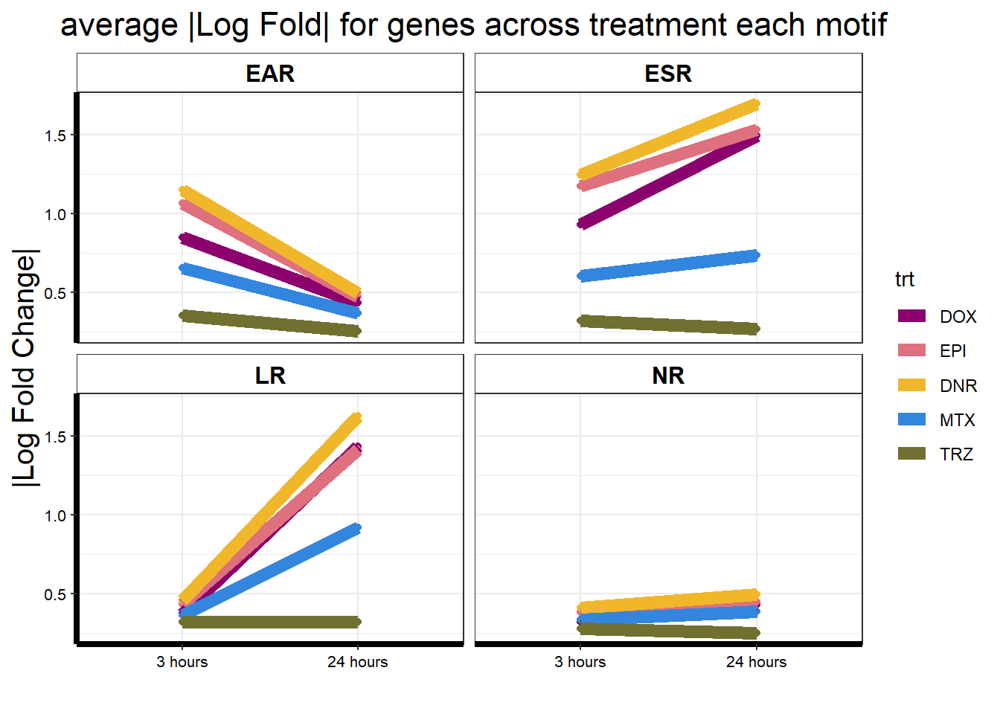

CorMotif_data
ERM
2024-04-01
Last updated: 2024-04-01
Checks: 7 0
Knit directory: ATAC_learning/
This reproducible R Markdown analysis was created with workflowr (version 1.7.1). The Checks tab describes the reproducibility checks that were applied when the results were created. The Past versions tab lists the development history.
Great! Since the R Markdown file has been committed to the Git repository, you know the exact version of the code that produced these results.
Great job! The global environment was empty. Objects defined in the global environment can affect the analysis in your R Markdown file in unknown ways. For reproduciblity it’s best to always run the code in an empty environment.
The command set.seed(20231016) was run prior to running
the code in the R Markdown file. Setting a seed ensures that any results
that rely on randomness, e.g. subsampling or permutations, are
reproducible.
Great job! Recording the operating system, R version, and package versions is critical for reproducibility.
Nice! There were no cached chunks for this analysis, so you can be confident that you successfully produced the results during this run.
Great job! Using relative paths to the files within your workflowr project makes it easier to run your code on other machines.
Great! You are using Git for version control. Tracking code development and connecting the code version to the results is critical for reproducibility.
The results in this page were generated with repository version 20061b0. See the Past versions tab to see a history of the changes made to the R Markdown and HTML files.
Note that you need to be careful to ensure that all relevant files for
the analysis have been committed to Git prior to generating the results
(you can use wflow_publish or
wflow_git_commit). workflowr only checks the R Markdown
file, but you know if there are other scripts or data files that it
depends on. Below is the status of the Git repository when the results
were generated:
Ignored files:
Ignored: .RData
Ignored: .Rhistory
Ignored: .Rproj.user/
Ignored: data/All_merged_peaks.tsv
Ignored: data/DEG_toplist_sep_n45.RDS
Ignored: data/FRiP_first_run.txt
Ignored: data/Frip_1_reads.csv
Ignored: data/Frip_2_reads.csv
Ignored: data/Frip_3_reads.csv
Ignored: data/Frip_4_reads.csv
Ignored: data/Frip_5_reads.csv
Ignored: data/Frip_6_reads.csv
Ignored: data/Ind1_75DA24h_dedup_peaks.csv
Ignored: data/Ind1_TSS_peaks.RDS
Ignored: data/Ind1_firstfragment_files.txt
Ignored: data/Ind1_fragment_files.txt
Ignored: data/Ind1_peaks_list.RDS
Ignored: data/Ind1_summary.txt
Ignored: data/Ind2_TSS_peaks.RDS
Ignored: data/Ind2_fragment_files.txt
Ignored: data/Ind2_peaks_list.RDS
Ignored: data/Ind2_summary.txt
Ignored: data/Ind3_TSS_peaks.RDS
Ignored: data/Ind3_fragment_files.txt
Ignored: data/Ind3_peaks_list.RDS
Ignored: data/Ind3_summary.txt
Ignored: data/Ind4_79B24h_dedup_peaks.csv
Ignored: data/Ind4_TSS_peaks.RDS
Ignored: data/Ind4_V24h_fraglength.txt
Ignored: data/Ind4_fragment_files.txt
Ignored: data/Ind4_fragment_filesN.txt
Ignored: data/Ind4_peaks_list.RDS
Ignored: data/Ind4_summary.txt
Ignored: data/Ind5_TSS_peaks.RDS
Ignored: data/Ind5_fragment_files.txt
Ignored: data/Ind5_fragment_filesN.txt
Ignored: data/Ind5_peaks_list.RDS
Ignored: data/Ind5_summary.txt
Ignored: data/Ind6_TSS_peaks.RDS
Ignored: data/Ind6_fragment_files.txt
Ignored: data/Ind6_peaks_list.RDS
Ignored: data/Ind6_summary.txt
Ignored: data/all_TSSE_scores.RDS
Ignored: data/aln_run1_results.txt
Ignored: data/anno_ind1_DA24h.RDS
Ignored: data/anno_ind4_V24h.RDS
Ignored: data/background_n45_he_peaks.RDS
Ignored: data/cardiac_muscle_FRIP.csv
Ignored: data/cardiomyocyte_FRIP.csv
Ignored: data/cormotif_full_4_run.RDS
Ignored: data/cormotif_full_4_run_he.RDS
Ignored: data/cormotif_full_6_run.RDS
Ignored: data/cormotif_full_6_run_he.RDS
Ignored: data/cormotif_probability_45_list.csv
Ignored: data/cormotif_probability_45_list_he.csv
Ignored: data/cormotif_probability_all_6_list.csv
Ignored: data/cormotif_probability_all_6_list_he.csv
Ignored: data/embryo_heart_FRIP.csv
Ignored: data/filt_Peaks_efit2.RDS
Ignored: data/filt_Peaks_efit2_bl.RDS
Ignored: data/filt_Peaks_efit2_n45.RDS
Ignored: data/first_Peaksummarycounts.csv
Ignored: data/first_run_frag_counts.txt
Ignored: data/full_bedfiles/
Ignored: data/high_conf_peak_counts.csv
Ignored: data/high_conf_peak_counts.txt
Ignored: data/high_conf_peaks_bl_counts.txt
Ignored: data/high_conf_peaks_counts.txt
Ignored: data/ind1_DA24hpeaks.RDS
Ignored: data/ind1_TSSE.RDS
Ignored: data/ind2_TSSE.RDS
Ignored: data/ind3_TSSE.RDS
Ignored: data/ind4_TSSE.RDS
Ignored: data/ind4_V24hpeaks.RDS
Ignored: data/ind5_TSSE.RDS
Ignored: data/ind6_TSSE.RDS
Ignored: data/initial_complete_stats_run1.txt
Ignored: data/left_ventricle_FRIP.csv
Ignored: data/mergedPeads.gff
Ignored: data/mergedPeaks.gff
Ignored: data/motif_list_full
Ignored: data/motif_list_n45
Ignored: data/motif_list_n45.RDS
Ignored: data/multiqc_fastqc_run1.txt
Ignored: data/multiqc_fastqc_run2.txt
Ignored: data/multiqc_genestat_run1.txt
Ignored: data/multiqc_genestat_run2.txt
Ignored: data/my_hc_filt_counts.RDS
Ignored: data/my_hc_filt_counts_n45.RDS
Ignored: data/n45_bedfiles/
Ignored: data/n45_files
Ignored: data/other_papers/
Ignored: data/peakAnnoList_1.RDS
Ignored: data/peakAnnoList_2.RDS
Ignored: data/peakAnnoList_24_full.RDS
Ignored: data/peakAnnoList_24_n45.RDS
Ignored: data/peakAnnoList_3.RDS
Ignored: data/peakAnnoList_3_full.RDS
Ignored: data/peakAnnoList_3_n45.RDS
Ignored: data/peakAnnoList_4.RDS
Ignored: data/peakAnnoList_5.RDS
Ignored: data/peakAnnoList_6.RDS
Ignored: data/peakAnnoList_full_motif.RDS
Ignored: data/peakAnnoList_n45_motif.RDS
Ignored: data/siglist_full.RDS
Ignored: data/siglist_n45.RDS
Ignored: data/toplist_6.RDS
Ignored: data/toplist_full.RDS
Ignored: data/toplist_full_DAR_6.RDS
Ignored: data/toplist_n45.RDS
Ignored: data/trimmed_seq_length.csv
Ignored: data/unclassified_full_set_peaks.RDS
Ignored: data/unclassified_n45_set_peaks.RDS
Ignored: trimmed_Ind1_75DA24h_S7.nodup.splited.bam/
Untracked files:
Untracked: Firstcorr plotATAC.pdf
Untracked: IND1_2_3_6_corrplot.pdf
Untracked: analysis/my_hc_filt_counts.csv
Untracked: code/IGV_snapshot_code.R
Untracked: code/TSSE.R
Untracked: code/corMotifcustom.R
Untracked: code/just_for_Fun.R
Untracked: code/toplist_assembly.R
Untracked: lcpm_filtered_corplot.pdf
Untracked: log2cpmfragcount.pdf
Untracked: output/cormotif_probability_45_list.csv
Untracked: output/cormotif_probability_all_6_list.csv
Untracked: splited/
Untracked: trimmed_Ind1_75DA24h_S7.nodup.fragment.size.distribution.pdf
Untracked: trimmed_Ind1_75DA3h_S1.nodup.fragment.size.distribution.pdf
Note that any generated files, e.g. HTML, png, CSS, etc., are not included in this status report because it is ok for generated content to have uncommitted changes.
These are the previous versions of the repository in which changes were
made to the R Markdown (analysis/CorMotif_data_n45.Rmd) and
HTML (docs/CorMotif_data_n45.html) files. If you’ve
configured a remote Git repository (see ?wflow_git_remote),
click on the hyperlinks in the table below to view the files as they
were in that past version.
| File | Version | Author | Date | Message |
|---|---|---|---|---|
| Rmd | 20061b0 | reneeisnowhere | 2024-04-01 | updates to characterization |
| html | cfb9264 | reneeisnowhere | 2024-03-29 | Build site. |
| Rmd | 64ec010 | reneeisnowhere | 2024-03-29 | updates to code |
| html | dc26b1f | reneeisnowhere | 2024-03-26 | Build site. |
| Rmd | 73d52a5 | reneeisnowhere | 2024-03-25 | adding in new analysis |
| html | 5acc255 | reneeisnowhere | 2024-03-22 | Build site. |
| Rmd | f6beadb | reneeisnowhere | 2024-03-22 | updates to DAR assessments |
| html | 1650f78 | reneeisnowhere | 2024-03-21 | Build site. |
| Rmd | f017b87 | reneeisnowhere | 2024-03-21 | adding Cormotif update |
| html | 32aa1a1 | reneeisnowhere | 2024-03-19 | Build site. |
| Rmd | b64480b | reneeisnowhere | 2024-03-19 | updates to cormotif data |
| html | 659f587 | reneeisnowhere | 2024-03-19 | Build site. |
| Rmd | 3651652 | reneeisnowhere | 2024-03-19 | adding cormotif |
library(tidyverse)
# library(ggsignif)
# library(cowplot)
# library(ggpubr)
# library(sjmisc)
library(kableExtra)
library(broom)
# library(biomaRt)
library(RColorBrewer)
# library(gprofiler2)
# library(qvalue)
library(ChIPseeker)
library("TxDb.Hsapiens.UCSC.hg38.knownGene")
library("org.Hs.eg.db")
# library(ATACseqQC)
library(rtracklayer)
library(edgeR)
library(ggfortify)
library(limma)
library(readr)
library(BiocGenerics)
library(gridExtra)
library(VennDiagram)
library(scales)
# library(ggVennDiagram)
library(Cormotif)
library(BiocParallel)
library(ggpubr)
library(devtools)
# install_github('davetang/bedr')
library(bedr)## Fit limma model using code as it is found in the original cormotif code. It has
## only been modified to add names to the matrix of t values, as well as the
## limma fits
limmafit.default <- function(exprs,groupid,compid) {
limmafits <- list()
compnum <- nrow(compid)
genenum <- nrow(exprs)
limmat <- matrix(0,genenum,compnum)
limmas2 <- rep(0,compnum)
limmadf <- rep(0,compnum)
limmav0 <- rep(0,compnum)
limmag1num <- rep(0,compnum)
limmag2num <- rep(0,compnum)
rownames(limmat) <- rownames(exprs)
colnames(limmat) <- rownames(compid)
names(limmas2) <- rownames(compid)
names(limmadf) <- rownames(compid)
names(limmav0) <- rownames(compid)
names(limmag1num) <- rownames(compid)
names(limmag2num) <- rownames(compid)
for(i in 1:compnum) {
selid1 <- which(groupid == compid[i,1])
selid2 <- which(groupid == compid[i,2])
eset <- new("ExpressionSet", exprs=cbind(exprs[,selid1],exprs[,selid2]))
g1num <- length(selid1)
g2num <- length(selid2)
designmat <- cbind(base=rep(1,(g1num+g2num)), delta=c(rep(0,g1num),rep(1,g2num)))
fit <- lmFit(eset,designmat)
fit <- eBayes(fit)
limmat[,i] <- fit$t[,2]
limmas2[i] <- fit$s2.prior
limmadf[i] <- fit$df.prior
limmav0[i] <- fit$var.prior[2]
limmag1num[i] <- g1num
limmag2num[i] <- g2num
limmafits[[i]] <- fit
# log odds
# w<-sqrt(1+fit$var.prior[2]/(1/g1num+1/g2num))
# log(0.99)+dt(fit$t[1,2],g1num+g2num-2+fit$df.prior,log=TRUE)-log(0.01)-dt(fit$t[1,2]/w, g1num+g2num-2+fit$df.prior, log=TRUE)+log(w)
}
names(limmafits) <- rownames(compid)
limmacompnum<-nrow(compid)
result<-list(t = limmat,
v0 = limmav0,
df0 = limmadf,
s20 = limmas2,
g1num = limmag1num,
g2num = limmag2num,
compnum = limmacompnum,
fits = limmafits)
}
limmafit.counts <-
function (exprs, groupid, compid, norm.factor.method = "TMM", voom.normalize.method = "none")
{
limmafits <- list()
compnum <- nrow(compid)
genenum <- nrow(exprs)
limmat <- matrix(NA,genenum,compnum)
limmas2 <- rep(0,compnum)
limmadf <- rep(0,compnum)
limmav0 <- rep(0,compnum)
limmag1num <- rep(0,compnum)
limmag2num <- rep(0,compnum)
rownames(limmat) <- rownames(exprs)
colnames(limmat) <- rownames(compid)
names(limmas2) <- rownames(compid)
names(limmadf) <- rownames(compid)
names(limmav0) <- rownames(compid)
names(limmag1num) <- rownames(compid)
names(limmag2num) <- rownames(compid)
for (i in 1:compnum) {
message(paste("Running limma for comparision",i,"/",compnum))
selid1 <- which(groupid == compid[i, 1])
selid2 <- which(groupid == compid[i, 2])
# make a new count data frame
counts <- cbind(exprs[, selid1], exprs[, selid2])
# remove NAs
not.nas <- which(apply(counts, 1, function(x) !any(is.na(x))) == TRUE)
# runn voom/limma
d <- DGEList(counts[not.nas,])
d <- calcNormFactors(d, method = norm.factor.method)
g1num <- length(selid1)
g2num <- length(selid2)
designmat <- cbind(base = rep(1, (g1num + g2num)), delta = c(rep(0,
g1num), rep(1, g2num)))
y <- voom(d, designmat, normalize.method = voom.normalize.method)
fit <- lmFit(y, designmat)
fit <- eBayes(fit)
limmafits[[i]] <- fit
limmat[not.nas, i] <- fit$t[, 2]
limmas2[i] <- fit$s2.prior
limmadf[i] <- fit$df.prior
limmav0[i] <- fit$var.prior[2]
limmag1num[i] <- g1num
limmag2num[i] <- g2num
}
limmacompnum <- nrow(compid)
names(limmafits) <- rownames(compid)
result <- list(t = limmat,
v0 = limmav0,
df0 = limmadf,
s20 = limmas2,
g1num = limmag1num,
g2num = limmag2num,
compnum = limmacompnum,
fits = limmafits)
}
limmafit.list <-
function (fitlist, cmp.idx=2)
{
compnum <- length(fitlist)
genes <- c()
for (i in 1:compnum) genes <- unique(c(genes, rownames(fitlist[[i]])))
genenum <- length(genes)
limmat <- matrix(NA,genenum,compnum)
limmas2 <- rep(0,compnum)
limmadf <- rep(0,compnum)
limmav0 <- rep(0,compnum)
limmag1num <- rep(0,compnum)
limmag2num <- rep(0,compnum)
rownames(limmat) <- genes
colnames(limmat) <- names(fitlist)
names(limmas2) <- names(fitlist)
names(limmadf) <- names(fitlist)
names(limmav0) <- names(fitlist)
names(limmag1num) <- names(fitlist)
names(limmag2num) <- names(fitlist)
for (i in 1:compnum) {
this.t <- fitlist[[i]]$t[,cmp.idx]
limmat[names(this.t),i] <- this.t
limmas2[i] <- fitlist[[i]]$s2.prior
limmadf[i] <- fitlist[[i]]$df.prior
limmav0[i] <- fitlist[[i]]$var.prior[cmp.idx]
limmag1num[i] <- sum(fitlist[[i]]$design[,cmp.idx]==0)
limmag2num[i] <- sum(fitlist[[i]]$design[,cmp.idx]==1)
}
limmacompnum <- compnum
result <- list(t = limmat,
v0 = limmav0,
df0 = limmadf,
s20 = limmas2,
g1num = limmag1num,
g2num = limmag2num,
compnum = limmacompnum,
fits = limmafits)
}
## Rank genes based on statistics
generank<-function(x) {
xcol<-ncol(x)
xrow<-nrow(x)
result<-matrix(0,xrow,xcol)
z<-(1:1:xrow)
for(i in 1:xcol) {
y<-sort(x[,i],decreasing=TRUE,na.last=TRUE)
result[,i]<-match(x[,i],y)
result[,i]<-order(result[,i])
}
result
}
## Log-likelihood for moderated t under H0
modt.f0.loglike<-function(x,df) {
a<-dt(x, df, log=TRUE)
result<-as.vector(a)
flag<-which(is.na(result)==TRUE)
result[flag]<-0
result
}
## Log-likelihood for moderated t under H1
## param=c(df,g1num,g2num,v0)
modt.f1.loglike<-function(x,param) {
df<-param[1]
g1num<-param[2]
g2num<-param[3]
v0<-param[4]
w<-sqrt(1+v0/(1/g1num+1/g2num))
dt(x/w, df, log=TRUE)-log(w)
a<-dt(x/w, df, log=TRUE)-log(w)
result<-as.vector(a)
flag<-which(is.na(result)==TRUE)
result[flag]<-0
result
}
## Correlation Motif Fit
cmfit.X<-function(x, type, K=1, tol=1e-3, max.iter=100) {
## initialize
xrow <- nrow(x)
xcol <- ncol(x)
loglike0 <- list()
loglike1 <- list()
p <- rep(1, K)/K
q <- matrix(runif(K * xcol), K, xcol)
q[1, ] <- rep(0.01, xcol)
for (i in 1:xcol) {
f0 <- type[[i]][[1]]
f0param <- type[[i]][[2]]
f1 <- type[[i]][[3]]
f1param <- type[[i]][[4]]
loglike0[[i]] <- f0(x[, i], f0param)
loglike1[[i]] <- f1(x[, i], f1param)
}
condlike <- list()
for (i in 1:xcol) {
condlike[[i]] <- matrix(0, xrow, K)
}
loglike.old <- -1e+10
for (i.iter in 1:max.iter) {
if ((i.iter%%50) == 0) {
print(paste("We have run the first ", i.iter, " iterations for K=",
K, sep = ""))
}
err <- tol + 1
clustlike <- matrix(0, xrow, K)
#templike <- matrix(0, xrow, 2)
templike1 <- rep(0, xrow)
templike2 <- rep(0, xrow)
for (j in 1:K) {
for (i in 1:xcol) {
templike1 <- log(q[j, i]) + loglike1[[i]]
templike2 <- log(1 - q[j, i]) + loglike0[[i]]
tempmax <- Rfast::Pmax(templike1, templike2)
templike1 <- exp(templike1 - tempmax)
templike2 <- exp(templike2 - tempmax)
tempsum <- templike1 + templike2
clustlike[, j] <- clustlike[, j] + tempmax +
log(tempsum)
condlike[[i]][, j] <- templike1/tempsum
}
clustlike[, j] <- clustlike[, j] + log(p[j])
}
#tempmax <- apply(clustlike, 1, max)
tempmax <- Rfast::rowMaxs(clustlike, value=TRUE)
for (j in 1:K) {
clustlike[, j] <- exp(clustlike[, j] - tempmax)
}
#tempsum <- apply(clustlike, 1, sum)
tempsum <- Rfast::rowsums(clustlike)
for (j in 1:K) {
clustlike[, j] <- clustlike[, j]/tempsum
}
#p.new <- (apply(clustlike, 2, sum) + 1)/(xrow + K)
p.new <- (Rfast::colsums(clustlike) + 1)/(xrow + K)
q.new <- matrix(0, K, xcol)
for (j in 1:K) {
clustpsum <- sum(clustlike[, j])
for (i in 1:xcol) {
q.new[j, i] <- (sum(clustlike[, j] * condlike[[i]][,
j]) + 1)/(clustpsum + 2)
}
}
err.p <- max(abs(p.new - p)/p)
err.q <- max(abs(q.new - q)/q)
err <- max(err.p, err.q)
loglike.new <- (sum(tempmax + log(tempsum)) + sum(log(p.new)) +
sum(log(q.new) + log(1 - q.new)))/xrow
p <- p.new
q <- q.new
loglike.old <- loglike.new
if (err < tol) {
break
}
}
clustlike <- matrix(0, xrow, K)
for (j in 1:K) {
for (i in 1:xcol) {
templike1 <- log(q[j, i]) + loglike1[[i]]
templike2 <- log(1 - q[j, i]) + loglike0[[i]]
tempmax <- Rfast::Pmax(templike1, templike2)
templike1 <- exp(templike1 - tempmax)
templike2 <- exp(templike2 - tempmax)
tempsum <- templike1 + templike2
clustlike[, j] <- clustlike[, j] + tempmax + log(tempsum)
condlike[[i]][, j] <- templike1/tempsum
}
clustlike[, j] <- clustlike[, j] + log(p[j])
}
#tempmax <- apply(clustlike, 1, max)
tempmax <- Rfast::rowMaxs(clustlike, value=TRUE)
for (j in 1:K) {
clustlike[, j] <- exp(clustlike[, j] - tempmax)
}
#tempsum <- apply(clustlike, 1, sum)
tempsum <- Rfast::rowsums(clustlike)
for (j in 1:K) {
clustlike[, j] <- clustlike[, j]/tempsum
}
p.post <- matrix(0, xrow, xcol)
for (j in 1:K) {
for (i in 1:xcol) {
p.post[, i] <- p.post[, i] + clustlike[, j] * condlike[[i]][,
j]
}
}
loglike.old <- loglike.old - (sum(log(p)) + sum(log(q) +
log(1 - q)))/xrow
loglike.old <- loglike.old * xrow
result <- list(p.post = p.post, motif.prior = p, motif.q = q,
loglike = loglike.old, clustlike=clustlike, condlike=condlike)
}
## Fit using (0,0,...,0) and (1,1,...,1)
cmfitall<-function(x, type, tol=1e-3, max.iter=100) {
## initialize
xrow<-nrow(x)
xcol<-ncol(x)
loglike0<-list()
loglike1<-list()
p<-0.01
## compute loglikelihood
L0<-matrix(0,xrow,1)
L1<-matrix(0,xrow,1)
for(i in 1:xcol) {
f0<-type[[i]][[1]]
f0param<-type[[i]][[2]]
f1<-type[[i]][[3]]
f1param<-type[[i]][[4]]
loglike0[[i]]<-f0(x[,i],f0param)
loglike1[[i]]<-f1(x[,i],f1param)
L0<-L0+loglike0[[i]]
L1<-L1+loglike1[[i]]
}
## EM algorithm to get MLE of p and q
loglike.old <- -1e10
for(i.iter in 1:max.iter) {
if((i.iter%%50) == 0) {
print(paste("We have run the first ", i.iter, " iterations",sep=""))
}
err<-tol+1
## compute posterior cluster membership
clustlike<-matrix(0,xrow,2)
clustlike[,1]<-log(1-p)+L0
clustlike[,2]<-log(p)+L1
tempmax<-apply(clustlike,1,max)
for(j in 1:2) {
clustlike[,j]<-exp(clustlike[,j]-tempmax)
}
tempsum<-apply(clustlike,1,sum)
## update motif occurrence rate
for(j in 1:2) {
clustlike[,j]<-clustlike[,j]/tempsum
}
p.new<-(sum(clustlike[,2])+1)/(xrow+2)
## evaluate convergence
err<-abs(p.new-p)/p
## evaluate whether the log.likelihood increases
loglike.new<-(sum(tempmax+log(tempsum))+log(p.new)+log(1-p.new))/xrow
loglike.old<-loglike.new
p<-p.new
if(err<tol) {
break;
}
}
## compute posterior p
clustlike<-matrix(0,xrow,2)
clustlike[,1]<-log(1-p)+L0
clustlike[,2]<-log(p)+L1
tempmax<-apply(clustlike,1,max)
for(j in 1:2) {
clustlike[,j]<-exp(clustlike[,j]-tempmax)
}
tempsum<-apply(clustlike,1,sum)
for(j in 1:2) {
clustlike[,j]<-clustlike[,j]/tempsum
}
p.post<-matrix(0,xrow,xcol)
for(i in 1:xcol) {
p.post[,i]<-clustlike[,2]
}
## return
#calculate back loglikelihood
loglike.old<-loglike.old-(log(p)+log(1-p))/xrow
loglike.old<-loglike.old*xrow
result<-list(p.post=p.post, motif.prior=p, loglike=loglike.old)
}
## Fit each dataset separately
cmfitsep<-function(x, type, tol=1e-3, max.iter=100) {
## initialize
xrow<-nrow(x)
xcol<-ncol(x)
loglike0<-list()
loglike1<-list()
p<-0.01*rep(1,xcol)
loglike.final<-rep(0,xcol)
## compute loglikelihood
for(i in 1:xcol) {
f0<-type[[i]][[1]]
f0param<-type[[i]][[2]]
f1<-type[[i]][[3]]
f1param<-type[[i]][[4]]
loglike0[[i]]<-f0(x[,i],f0param)
loglike1[[i]]<-f1(x[,i],f1param)
}
p.post<-matrix(0,xrow,xcol)
## EM algorithm to get MLE of p
for(coli in 1:xcol) {
loglike.old <- -1e10
for(i.iter in 1:max.iter) {
if((i.iter%%50) == 0) {
print(paste("We have run the first ", i.iter, " iterations",sep=""))
}
err<-tol+1
## compute posterior cluster membership
clustlike<-matrix(0,xrow,2)
clustlike[,1]<-log(1-p[coli])+loglike0[[coli]]
clustlike[,2]<-log(p[coli])+loglike1[[coli]]
tempmax<-apply(clustlike,1,max)
for(j in 1:2) {
clustlike[,j]<-exp(clustlike[,j]-tempmax)
}
tempsum<-apply(clustlike,1,sum)
## evaluate whether the log.likelihood increases
loglike.new<-sum(tempmax+log(tempsum))/xrow
## update motif occurrence rate
for(j in 1:2) {
clustlike[,j]<-clustlike[,j]/tempsum
}
p.new<-(sum(clustlike[,2]))/(xrow)
## evaluate convergence
err<-abs(p.new-p[coli])/p[coli]
loglike.old<-loglike.new
p[coli]<-p.new
if(err<tol) {
break;
}
}
## compute posterior p
clustlike<-matrix(0,xrow,2)
clustlike[,1]<-log(1-p[coli])+loglike0[[coli]]
clustlike[,2]<-log(p[coli])+loglike1[[coli]]
tempmax<-apply(clustlike,1,max)
for(j in 1:2) {
clustlike[,j]<-exp(clustlike[,j]-tempmax)
}
tempsum<-apply(clustlike,1,sum)
for(j in 1:2) {
clustlike[,j]<-clustlike[,j]/tempsum
}
p.post[,coli]<-clustlike[,2]
loglike.final[coli]<-loglike.old
}
## return
loglike.final<-loglike.final*xrow
result<-list(p.post=p.post, motif.prior=p, loglike=loglike.final)
}
## Fit the full model
cmfitfull<-function(x, type, tol=1e-3, max.iter=100) {
## initialize
xrow<-nrow(x)
xcol<-ncol(x)
loglike0<-list()
loglike1<-list()
K<-2^xcol
p<-rep(1,K)/K
pattern<-rep(0,xcol)
patid<-matrix(0,K,xcol)
## compute loglikelihood
for(i in 1:xcol) {
f0<-type[[i]][[1]]
f0param<-type[[i]][[2]]
f1<-type[[i]][[3]]
f1param<-type[[i]][[4]]
loglike0[[i]]<-f0(x[,i],f0param)
loglike1[[i]]<-f1(x[,i],f1param)
}
L<-matrix(0,xrow,K)
for(i in 1:K)
{
patid[i,]<-pattern
for(j in 1:xcol) {
if(pattern[j] < 0.5) {
L[,i]<-L[,i]+loglike0[[j]]
} else {
L[,i]<-L[,i]+loglike1[[j]]
}
}
if(i < K) {
pattern[xcol]<-pattern[xcol]+1
j<-xcol
while(pattern[j] > 1) {
pattern[j]<-0
j<-j-1
pattern[j]<-pattern[j]+1
}
}
}
## EM algorithm to get MLE of p and q
loglike.old <- -1e10
for(i.iter in 1:max.iter) {
if((i.iter%%50) == 0) {
print(paste("We have run the first ", i.iter, " iterations",sep=""))
}
err<-tol+1
## compute posterior cluster membership
clustlike<-matrix(0,xrow,K)
for(j in 1:K) {
clustlike[,j]<-log(p[j])+L[,j]
}
tempmax<-apply(clustlike,1,max)
for(j in 1:K) {
clustlike[,j]<-exp(clustlike[,j]-tempmax)
}
tempsum<-apply(clustlike,1,sum)
## update motif occurrence rate
for(j in 1:K) {
clustlike[,j]<-clustlike[,j]/tempsum
}
p.new<-(apply(clustlike,2,sum)+1)/(xrow+K)
## evaluate convergence
err<-max(abs(p.new-p)/p)
## evaluate whether the log.likelihood increases
loglike.new<-(sum(tempmax+log(tempsum))+sum(log(p.new)))/xrow
loglike.old<-loglike.new
p<-p.new
if(err<tol) {
break;
}
}
## compute posterior p
clustlike<-matrix(0,xrow,K)
for(j in 1:K) {
clustlike[,j]<-log(p[j])+L[,j]
}
tempmax<-apply(clustlike,1,max)
for(j in 1:K) {
clustlike[,j]<-exp(clustlike[,j]-tempmax)
}
tempsum<-apply(clustlike,1,sum)
for(j in 1:K) {
clustlike[,j]<-clustlike[,j]/tempsum
}
p.post<-matrix(0,xrow,xcol)
for(j in 1:K) {
for(i in 1:xcol) {
if(patid[j,i] > 0.5) {
p.post[,i]<-p.post[,i]+clustlike[,j]
}
}
}
## return
#calculate back loglikelihood
loglike.old<-loglike.old-sum(log(p))/xrow
loglike.old<-loglike.old*xrow
result<-list(p.post=p.post, motif.prior=p, loglike=loglike.old)
}
generatetype<-function(limfitted)
{
jtype<-list()
df<-limfitted$g1num+limfitted$g2num-2+limfitted$df0
for(j in 1:limfitted$compnum)
{
jtype[[j]]<-list(f0=modt.f0.loglike, f0.param=df[j], f1=modt.f1.loglike, f1.param=c(df[j],limfitted$g1num[j],limfitted$g2num[j],limfitted$v0[j]))
}
jtype
}
cormotiffit <- function(exprs, groupid=NULL, compid=NULL, K=1, tol=1e-3,
max.iter=100, BIC=TRUE, norm.factor.method="TMM",
voom.normalize.method = "none", runtype=c("logCPM","counts","limmafits"), each=3)
{
# first I want to do some typechecking. Input can be either a normalized
# matrix, a count matrix, or a list of limma fits. Dispatch the correct
# limmafit accordingly.
# todo: add some typechecking here
limfitted <- list()
if (runtype=="counts") {
limfitted <- limmafit.counts(exprs,groupid,compid, norm.factor.method, voom.normalize.method)
} else if (runtype=="logCPM") {
limfitted <- limmafit.default(exprs,groupid,compid)
} else if (runtype=="limmafits") {
limfitted <- limmafit.list(exprs)
} else {
stop("runtype must be one of 'logCPM', 'counts', or 'limmafits'")
}
jtype<-generatetype(limfitted)
fitresult<-list()
ks <- rep(K, each = each)
fitresult <- bplapply(1:length(ks), function(i, x, type, ks, tol, max.iter) {
cmfit.X(x, type, K = ks[i], tol = tol, max.iter = max.iter)
}, x=limfitted$t, type=jtype, ks=ks, tol=tol, max.iter=max.iter)
best.fitresults <- list()
for (i in 1:length(K)) {
w.k <- which(ks==K[i])
this.bic <- c()
for (j in w.k) this.bic[j] <- -2 * fitresult[[j]]$loglike + (K[i] - 1 + K[i] * limfitted$compnum) * log(dim(limfitted$t)[1])
w.min <- which(this.bic == min(this.bic, na.rm = TRUE))[1]
best.fitresults[[i]] <- fitresult[[w.min]]
}
fitresult <- best.fitresults
bic <- rep(0, length(K))
aic <- rep(0, length(K))
loglike <- rep(0, length(K))
for (i in 1:length(K)) loglike[i] <- fitresult[[i]]$loglike
for (i in 1:length(K)) bic[i] <- -2 * fitresult[[i]]$loglike + (K[i] - 1 + K[i] * limfitted$compnum) * log(dim(limfitted$t)[1])
for (i in 1:length(K)) aic[i] <- -2 * fitresult[[i]]$loglike + 2 * (K[i] - 1 + K[i] * limfitted$compnum)
if(BIC==TRUE) {
bestflag=which(bic==min(bic))
}
else {
bestflag=which(aic==min(aic))
}
result<-list(bestmotif=fitresult[[bestflag]],bic=cbind(K,bic),
aic=cbind(K,aic),loglike=cbind(K,loglike), allmotifs=fitresult)
}
cormotiffitall<-function(exprs,groupid,compid, tol=1e-3, max.iter=100)
{
limfitted<-limmafit(exprs,groupid,compid)
jtype<-generatetype(limfitted)
fitresult<-cmfitall(limfitted$t,type=jtype,tol=1e-3,max.iter=max.iter)
}
cormotiffitsep<-function(exprs,groupid,compid, tol=1e-3, max.iter=100)
{
limfitted<-limmafit(exprs,groupid,compid)
jtype<-generatetype(limfitted)
fitresult<-cmfitsep(limfitted$t,type=jtype,tol=1e-3,max.iter=max.iter)
}
cormotiffitfull<-function(exprs,groupid,compid, tol=1e-3, max.iter=100)
{
limfitted<-limmafit(exprs,groupid,compid)
jtype<-generatetype(limfitted)
fitresult<-cmfitfull(limfitted$t,type=jtype,tol=1e-3,max.iter=max.iter)
}
plotIC<-function(fitted_cormotif)
{
oldpar<-par(mfrow=c(1,2))
plot(fitted_cormotif$bic[,1], fitted_cormotif$bic[,2], type="b",xlab="Motif Number", ylab="BIC", main="BIC")
plot(fitted_cormotif$aic[,1], fitted_cormotif$aic[,2], type="b",xlab="Motif Number", ylab="AIC", main="AIC")
}
plotMotif<-function(fitted_cormotif,title="")
{
layout(matrix(1:2,ncol=2))
u<-1:dim(fitted_cormotif$bestmotif$motif.q)[2]
v<-1:dim(fitted_cormotif$bestmotif$motif.q)[1]
image(u,v,t(fitted_cormotif$bestmotif$motif.q),
col=gray(seq(from=1,to=0,by=-0.1)),xlab="Study",yaxt = "n",
ylab="Corr. Motifs",main=paste(title,"pattern",sep=" "))
axis(2,at=1:length(v))
for(i in 1:(length(u)+1))
{
abline(v=(i-0.5))
}
for(i in 1:(length(v)+1))
{
abline(h=(i-0.5))
}
Ng=10000
if(is.null(fitted_cormotif$bestmotif$p.post)!=TRUE)
Ng=nrow(fitted_cormotif$bestmotif$p.post)
genecount=floor(fitted_cormotif$bestmotif$motif.p*Ng)
NK=nrow(fitted_cormotif$bestmotif$motif.q)
plot(0,0.7,pch=".",xlim=c(0,1.2),ylim=c(0.75,NK+0.25),
frame.plot=FALSE,axes=FALSE,xlab="No. of genes",ylab="", main=paste(title,"frequency",sep=" "))
segments(0,0.7,fitted_cormotif$bestmotif$motif.p[1],0.7)
rect(0,1:NK-0.3,fitted_cormotif$bestmotif$motif.p,1:NK+0.3,
col="dark grey")
mtext(1:NK,at=1:NK,side=2,cex=0.8)
text(fitted_cormotif$bestmotif$motif.p+0.15,1:NK,
labels=floor(fitted_cormotif$bestmotif$motif.p*Ng))
}functions
bed_to_granges <- function(file){
df <- read.table(file,
header=F,
stringsAsFactors=F)
if(length(df) > 6){
df <- df[,-c(7:length(df))]
}
if(length(df)<3){
stop("File has less than 3 columns")
}
header <- c('chr','start','end','id','score','strand')
names(df) <- header[1:length(names(df))]
if('strand' %in% colnames(df)){
df$strand <- gsub(pattern="[^+-]+", replacement = '*', x = df$strand)
}
library("GenomicRanges")
if(length(df)==3){
gr <- with(df, GRanges(chr, IRanges(start, end)))
} else if (length(df)==4){
gr <- with(df, GRanges(chr, IRanges(start, end), id=id))
} else if (length(df)==5){
gr <- with(df, GRanges(chr, IRanges(start, end), id=id, score=score))
} else if (length(df)==6){
gr <- with(df, GRanges(chr, IRanges(start, end), id=id, score=score, strand=strand))
}
return(gr)
}
#
#
# write_bed <- function(gr, path = "", ucsc_name = F) {
# # Makes a bed file from a granges object
# # name.col and score.col not working yet.
# df <- gr %>%
# as.data.frame() %>%
# dplyr::select(seqnames, start, end)
# if (ucsc_name != "") {
# cat(paste0("track name=\"",ucsc_name,"\"\n"), file = path)
# }
# write.table(df, file = path, append = T,
# quote = F, sep = "\t", row.names = F, col.names = F)
# }high_conf_peak_counts <- read.csv("data/high_conf_peak_counts.csv", row.names = 1)
high_conf_peak_counts_n45 <- high_conf_peak_counts %>%
column_to_rownames("Geneid") %>%
dplyr::select(Ind1_75DA24h:Ind3_77V3h,Ind6_71DA24h:Ind6_71V3h)
groupmat_names_n45 <- data.frame(timeset = colnames(high_conf_peak_counts_n45))
df_names_n45 <-groupmat_names_n45 %>%
mutate(timeset=gsub("75","1_",timeset)) %>%
mutate(timeset=gsub("87","2_",timeset)) %>%
mutate(timeset=gsub("77","3_",timeset)) %>%
mutate(timeset=gsub("79","4_",timeset)) %>%
mutate(timeset=gsub("78","5_",timeset)) %>%
mutate(timeset=gsub("71","6_",timeset)) %>%
mutate(timeset = gsub("24h","_24h",timeset),
timeset = gsub("3h","_3h",timeset)) %>%
separate(timeset, into = c(NA,"indv","trt","time"), sep= "_") %>%
mutate(trt= case_match(trt, 'DX' ~'DOX', 'E'~'EPI', 'DA'~'DNR', 'M'~'MTX', 'T'~'TRZ', 'V'~'VEH',.default = trt)) %>%
dplyr::filter(indv %in% c(1,2,3,6))
group_n45 <- c( rep(c(1,2,3,4,5,6,7,8,9,10,11,12),4))
group_n45 <- factor(group_n45, levels =c("1","2","3","4","5","6","7","8","9","10","11","12"))
indv_n45 <- df_names_n45$indv
# indv <- factor(indv, levels = c(1,2,3,4,5,6))
time_n45 <- df_names_n45$time
# time <- factor(time, levels =c("3h","24"))
trt_n45 <- df_names_n45$trt
label_n45 <- paste0(indv_n45,"_",trt_n45,"_",time_n45)
group_fac_n45 <- group_n45
groupid_n45 <- as.numeric(group_fac_n45)
compid_n45 <- data.frame(c1= c(2,4,6,8,10,1,3,5,7,9), c2 = c( 12,12,12,12,12,11,11,11,11,11))
y_TMM_cpm_n45 <- cpm(high_conf_peak_counts_n45, log = TRUE)
colnames(y_TMM_cpm_n45) <- label_n45
# y_TMM_cpm
set.seed(31415)
# cormotif_initial_n45 <- cormotiffit(exprs = y_TMM_cpm_n45, groupid = groupid_n45, compid = compid_n45, K=1:6, max.iter = 500, runtype = "logCPM")
# saveRDS(cormotif_initial_n45,"data/cormotif_n45_4_run.RDS")
cormotif_initial_n45 <- readRDS("data/cormotif_full_4_run.RDS")
gene_prob_tran_n45 <- cormotif_initial_n45$bestmotif$p.post
rownames(gene_prob_tran_n45) <- rownames(high_conf_peak_counts_n45)
motif_prob_n45 <- cormotif_initial_n45$bestmotif$clustlike
rownames(motif_prob_n45) <- rownames(high_conf_peak_counts_n45)
# write.csv(motif_prob_n45,"data/cormotif_probability_45_list.csv")
Cormotif::plotIC(cormotif_initial_n45)
| Version | Author | Date |
|---|---|---|
| 659f587 | reneeisnowhere | 2024-03-19 |
Cormotif::plotMotif(cormotif_initial_n45)
| Version | Author | Date |
|---|---|---|
| 659f587 | reneeisnowhere | 2024-03-19 |
myColors <- rev(c("#FFFFFF", "#E6E6E6" ,"#CCCCCC", "#B3B3B3", "#999999", "#808080", "#666666","#4C4C4C", "#333333", "#191919","#000000"))
plot.new()
legend('bottomleft',fill=myColors, legend =rev(c("0", "0.1", "0.2", "0.3", "0.4", "0.5", "0.6", "0.7", "0.8","0.9", "1")), box.col="white",title = "Probability\nlegend", horiz=FALSE,title.cex=.8)
| Version | Author | Date |
|---|---|---|
| 32aa1a1 | reneeisnowhere | 2024-03-19 |
Study breakdown: 1 = DNR_3, 2 = DOX_3, 3 = EPI_3, 4 = MTX_3, 5 =
TRZ_3
6 = DNR_24, 7 = DOX_24, 8 = EPI_24, 9 = MTX_24, 10 = TRZ_24
Cormotif with out blacklisted regions and with peaks considered to be highly expressed:
high_conf_peak_counts <- read.csv("data/high_conf_peak_counts.csv", row.names = 1)
high_conf_peak_counts_n45 <- high_conf_peak_counts %>%
column_to_rownames("Geneid") %>%
dplyr::select(Ind1_75DA24h:Ind3_77V3h,Ind6_71DA24h:Ind6_71V3h)
lcpm_n45 <- cpm(high_conf_peak_counts_n45, log=TRUE) ### for determining the basic cutoffs
row_means_n45 <- rowMeans(lcpm_n45)
my_hc_filtered_counts_he_n45 <- high_conf_peak_counts_n45[row_means_n45 > 0,]
groupmat_names_n45 <- data.frame(timeset = colnames(my_hc_filtered_counts_he_n45))
df_names_n45 <-groupmat_names_n45 %>%
mutate(timeset=gsub("75","1_",timeset)) %>%
mutate(timeset=gsub("87","2_",timeset)) %>%
mutate(timeset=gsub("77","3_",timeset)) %>%
mutate(timeset=gsub("79","4_",timeset)) %>%
mutate(timeset=gsub("78","5_",timeset)) %>%
mutate(timeset=gsub("71","6_",timeset)) %>%
mutate(timeset = gsub("24h","_24h",timeset),
timeset = gsub("3h","_3h",timeset)) %>%
separate(timeset, into = c(NA,"indv","trt","time"), sep= "_") %>%
mutate(trt= case_match(trt, 'DX' ~'DOX', 'E'~'EPI', 'DA'~'DNR', 'M'~'MTX', 'T'~'TRZ', 'V'~'VEH',.default = trt)) %>%
dplyr::filter(indv %in% c(1,2,3,6))
# group_fac <- group
# groupid <- as.nCumeric(group_fac)
indv_n45 <- df_names_n45$indv
time_n45 <- df_names_n45$time
# time <- factor(time, levels =c("3h","24"))
trt_n45 <- df_names_n45$trt
label_n45 <- paste0(indv_n45,"_",trt_n45,"_",time_n45)
compid_n45 <- data.frame(c1= c(2,4,6,8,10,1,3,5,7,9), c2 = c( 12,12,12,12,12,11,11,11,11,11))
y_TMM_cpm_n45_he <- cpm(my_hc_filtered_counts_he_n45, log = TRUE)
# y_TMM_cpm_n45_he <- cpm(high_conf_peak_counts_he_n45, log = TRUE)
rownames(y_TMM_cpm_n45_he) <- rownames(my_hc_filtered_counts_he_n45)
colnames(y_TMM_cpm_n45_he) <- label_n45
# y_TMM_cpm
# set.seed(31415)
# cormotif_initial_n45_he <- cormotiffit(exprs = y_TMM_cpm_n45_he, groupid = groupid_n45, compid = compid_n45, K=1:6, max.iter = 500, runtype = "logCPM")
# saveRDS(cormotif_initial_n45_he,"data/cormotif_full_4_run_he.RDS")
cormotif_initial_n45_he <- readRDS("data/cormotif_full_4_run_he.RDS")
gene_prob_tran_n45_he <- cormotif_initial_n45_he$bestmotif$p.post
rownames(gene_prob_tran_n45_he) <- rownames(my_hc_filtered_counts_he_n45)
motif_prob_n45_he <- cormotif_initial_n45_he$bestmotif$clustlike
rownames(motif_prob_n45_he) <- rownames(gene_prob_tran_n45_he)
# write.csv(motif_prob_n45_he,"data/cormotif_probability_45_list_he.csv")
Cormotif::plotIC(cormotif_initial_n45_he)
| Version | Author | Date |
|---|---|---|
| 1650f78 | reneeisnowhere | 2024-03-21 |
Cormotif::plotMotif(cormotif_initial_n45_he)
| Version | Author | Date |
|---|---|---|
| 1650f78 | reneeisnowhere | 2024-03-21 |
Doing the analysis on the filtered set, just like the full set.
motif_prob_n45 <- read.csv("data/cormotif_probability_45_list_he.csv")
motif_prob_n45 <- motif_prob_n45 %>%
filter(!if_any(everything(), ~ grepl('^chrUn', .))) %>%
column_to_rownames('X')
clust1_n45 <- motif_prob_n45 %>%
as.data.frame() %>%
filter(V1>0.5) %>%
rownames
clust2_n45 <- motif_prob_n45 %>%
as.data.frame() %>%
filter(V2>0.5) %>%
rownames
clust3_n45 <- motif_prob_n45 %>%
as.data.frame() %>%
filter(V3>0.5) %>%
rownames
clust4_n45 <- motif_prob_n45 %>%
as.data.frame() %>%
filter(V4>0.5) %>%
rownames
# backGL_n45_he <- row.names(motif_prob_n45_he)
# saveRDS(backGL_n45_he,"data/background_n45_he_peaks.RDS")
# unclassified_n45 <- setdiff(backGL_n45_he,union(clust1_n45,union(clust2_n45,union(clust4_n45,clust3_n45))))
# #
# motif_list_n45 <- list("NR_n45"=clust1_n45,"LR_n45"=clust2_n45,"EAR_n45"=clust3_n45,"ESR_n45"=clust4_n45,"unclassified_n45"=unclassified_n45, "backGL_n45_he"=backGL_n45_he)
# saveRDS(motif_list_n45,"data/motif_list_n45.RDS")
# saveRDS(unclassified_n45,"data/unclassified_n45_set_peaks.RDS")Seems to be grouping like RNA-seq. I am using the same nomenclature. I filter each column of the likelihood of belonging to the cluster by > 0.5- This causes some number discrepancies in overall.
- Clust1 has 83741 regions and is the No Response set.
- Clust2 has 41767 regions and is the Late-Response set.
- Clust3 has 7321 regions and is the Early-Acute Response set.
- Clust4 has 15667 regions and is the Early-Sustained Response set.
These contain 148496 total peaks out of 151809 for approximately 97.8176524 percent of all peaks accounted for.
txdb <- TxDb.Hsapiens.UCSC.hg38.knownGene
# loadFile_peakCall <- function(){
# file <- choose.files()
# file <- readPeakFile(file, header = FALSE)
# return(file)
# }
#
# prepGRangeObj <- function(seek_object){
# seek_object$Peaks = seek_object$V4
# seek_object$level = seek_object$V5
# seek_object$V4 = seek_object$V5 = NULL
# return(seek_object)
# }
motif_list_n45 <- readRDS("data/motif_list_n45.RDS")
list2env(motif_list_n45, envir= .GlobalEnv)<environment: R_GlobalEnv>TSS = getBioRegion(TxDb=txdb, upstream=2000, downstream=2000, by = "gene",
type = "start_site")
###~This code is how I transformed data frames into bedfiles initially. I used info
### ~from the blog of Dave Tang about granges objects
##converting lists to dataframes as bed files
#
# data.frame("EAR_n45" = EAR_n45) %>%
# mutate(name =EAR_n45) %>%
# separate(EAR_n45, into = c( "chr","start","end")) %>%
# # mutate(strand=".") %>%
# mutate(start=as.integer(start), end=as.integer(end)) %>%
# dplyr::select(chr, start,end,name) %>%
#
# # unite(.,col="start-end",start, end,sep = "-") %>%
# write.table(.,file = "data/n45_bedfiles/EAR_n45.bed", row.names =FALSE,col.name=FALSE,append = FALSE, quote = FALSE)
# #
# # test <-
# data.frame("unclassified_n45" = unclassified_n45) %>%
# mutate(name =unclassified_n45) %>%
# filter(!if_any(everything(), ~ grepl('^chrUn', .))) %>%
# separate(unclassified_n45, into = c( "chr","start","end")) %>%
# mutate(start=as.integer(start), end=as.integer(end)) %>%
# na.omit(.) %>%
# # dplyr::select(chr, start,end,name) %>%
# write.table(.,file = "data/n45_bedfiles/unclassified_n45.bed", row.names =FALSE,col.name=FALSE,append = FALSE, quote = FALSE)
# #
# # #
# data.frame("background_n45" = backGL_n45_he) %>%
# mutate(name =background_n45) %>%
# separate(background_n45, into = c( "chr","start","end"))%>%
# filter(!if_any(everything(), ~ grepl('^chrUn', .))) %>%
# # mutate(strand=".") %>%
# mutate(start=as.integer(start), end=as.integer(end)) %>%
# na.omit(.) %>%
# dplyr::select(chr, start,end,name) %>%
#
# write.table(.,file = "data/n45_bedfiles/background_n45.bed",row.names =FALSE,col.name=FALSE,append = FALSE, quote = FALSE)
# # # #
# data.frame("ESR_n45" = ESR_n45) %>%
# mutate(name =ESR_n45) %>%
# separate(ESR_n45, into = c( "chr","start","end")) %>%
# # mutate(strand=".") %>%
# mutate(start=as.integer(start), end=as.integer(end)) %>%
# dplyr::select(chr, start,end,name) %>%
# na.omit(.) %>%
# # unite(.,col="start-end",start, end,sep = "-") %>%
# write.table(.,file = "data/n45_bedfiles/ESR_n45.bed", row.names =FALSE,col.name=FALSE,append = FALSE, quote = FALSE)
# #
# data.frame("LR_n45" = LR_n45) %>%
# mutate(name =LR_n45) %>%
# separate(LR_n45, into = c( "chr","start","end")) %>%
# mutate(start=as.integer(start), end=as.integer(end)) %>%
# dplyr::select(chr, start,end,name) %>%
# na.omit(.) %>%
# # unite(.,col="start-end",start, end,sep = "-") %>%
# write.table(.,file = "data/n45_bedfiles/LR_n45.bed", row.names =FALSE,col.name=FALSE,append = FALSE, quote = FALSE)
#
# data.frame("NR_n45" = NR_n45) %>%
# mutate(name =NR_n45) %>%
# separate(NR_n45, into = c( "chr","start","end")) %>%
#
# mutate(start=as.integer(start), end=as.integer(end)) %>%
# na.omit(.) %>%
# dplyr::select(chr, start,end,name) %>%
#
# # unite(.,col="start-end",start, end,sep = "-") %>%
# write.table(.,file = "data/n45_bedfiles/NR_n45.bed", row.names =FALSE,col.name=FALSE,append = FALSE, quote = FALSE)
### ~Once I converted to bed files via dave tang's method, I then reimported those dataframes as granges
### ~ formatted files. NOTE: the bed file were not usable and therefore had to export them again
### ~ I have this process "kind-of written out" here::
# To make bed file in R as export:
#
# suppressPackageStartupMessages(library(GenomicRanges))
# suppressPackageStartupMessages(library(rtracklayer))
# suppressPackageStartupMessages(library(tidyverse))
#
# # data
# bed <- data.frame(chrom=c(rep("Chr1",5)),
# chromStart=c(18915152,24199229,73730,81430,89350),
# chromEnd=c(18915034,24199347,74684,81550,89768),
# strand=c("-","+","+","+","+"))
#
# # transform such as always chromStart < chromEnd
# bed2 <- bed |>
# transform(chromStart=ifelse(chromStart>chromEnd,chromEnd,chromStart),
# chromEnd= ifelse(chromEnd<chromStart,chromStart,chromEnd))
#
# # Genomic Ranges
# bed3 <- GenomicRanges::makeGRangesFromDataFrame(bed2)
# head(bed3)
# #> GRanges object with 5 ranges and 0 metadata columns:
# #> seqnames ranges strand
# #> <Rle> <IRanges> <Rle>
# #> [1] Chr1 18915034-18915152 -
# #> [2] Chr1 24199229-24199347 +
# #> [3] Chr1 73730-74684 +
# #> [4] Chr1 81430-81550 +
# #> [5] Chr1 89350-89768 +
# #> -------
# #> seqinfo: 1 sequence from an unspecified genome; no seqlengths
#
# # rtracklayer
# bed4 <- rtracklayer::export(bed3, format="bed", ignore.strand = FALSE)
# bed4
# #> [1] "Chr1\t18915033\t18915152\t.\t0\t-" "Chr1\t24199228\t24199347\t.\t0\t+"
# #> [3] "Chr1\t73729\t74684\t.\t0\t+" "Chr1\t81429\t81550\t.\t0\t+"
# #> [5] "Chr1\t89349\t89768\t.\t0\t+"
#
# # write it as a bed file
# # this is essential to make sure that this works properly
# write.table(bed4, "test.bed", sep="\t", col.names=FALSE, row.names = FALSE, append = TRUE, quote = FALSE)
### ~importing via Dave Tang process:
# EAR_n45_gr <- bed_to_granges("data/n45_bedfiles/EAR_n45.bed")
# ESR_n45_gr <- bed_to_granges("data/n45_bedfiles/ESR_n45.bed")
# LR_n45_gr <- bed_to_granges("data/n45_bedfiles/LR_n45.bed")
# NR_n45_gr <- bed_to_granges("data/n45_bedfiles/NR_n45.bed")
# unclassified_n45_gr <- bed_to_granges("data/n45_bedfiles/unclassified_n45.bed")
# background_n45_gr <- bed_to_granges("data/n45_bedfiles/background_n45.bed")
### ~made these granges filies into a list to annotate and do future analysis
# mylist <- list(EAR_n45_gr,ESR_n45_gr,LR_n45_gr,NR_n45_gr,unclassified_n45_gr,background_n45_gr)
# peakAnnoList<- lapply(mylist, annotatePeak, tssRegion =c(-2000,2000), TxDb= txdb)
# names(peakAnnoList) <- c("EAR_n45_gr","ESR_n45_gr","LR_n45_gr","NR_n45_gr","unclassified_gr","background_gr")
# saveRDS(peakAnnoList, "data/peakAnnoList_n45_motif.RDS")
peakAnnoList_n45_motif <- readRDS("data/peakAnnoList_n45_motif.RDS")
plotAnnoBar(peakAnnoList_n45_motif[1:4], main = "Genomic Feature Distribution, CorMotif")+
ggtitle ("Genomic Feature Distribution, Individuals 1,2,3,6")
EAR examples of top 3 peaks
my_hc_filtered_counts_n45 <- readRDS("data/my_hc_filt_counts_n45.RDS")
log_filt_hc_n45 <- cpm(my_hc_filtered_counts_n45, log = TRUE) %>% as.data.frame()
drug_pal <- c("#8B006D","#DF707E","#F1B72B", "#3386DD","#707031","#41B333")
log_filt_hc_n45 %>%
# rownames_to_column("peak") %>%
# dplyr::filter(peak %in% motif_list_n45$EAR)
# log_filt_hc %>%
dplyr::filter(row.names(.) %in% EAR_n45[c(1:3)]) %>%
mutate(Peak = row.names(.)) %>%
pivot_longer(cols = !Peak, names_to = "sample", values_to = "counts") %>%
separate("sample", into = c("indv","trt","time")) %>%
mutate(time=factor(time, levels = c("3h","24h"))) %>%
mutate(trt=factor(trt, levels= c("DOX","EPI","DNR","MTX","TRZ","VEH"))) %>%
ggplot(., aes (x = time, y=counts))+
geom_boxplot(aes(fill=trt))+
facet_wrap(Peak~.)+
ggtitle("log2cpm in EAR peaks n45")+
scale_fill_manual(values = drug_pal)
EAR log fold change peaks
toplist_n45<- readRDS("data/toplist_n45.RDS")
toplist_n45 %>%
# rownames_to_column("peak") %>%
# dplyr::filter(peak %in% motif_list_n45$EAR)
# log_filt_hc %>%
dplyr::filter(peak %in% motif_list_n45$EAR) %>%
mutate(logFC= abs(logFC)) %>%
ggplot(., aes (x = time, y=logFC))+
geom_boxplot(aes(fill=trt))+
# facet_wrap(Peak~.)+
ggtitle("logFC in EAR peaks")+
scale_fill_manual(values = drug_pal)+
theme_bw()
| Version | Author | Date |
|---|---|---|
| dc26b1f | reneeisnowhere | 2024-03-26 |
ESR examples of top 3 peaks
log_filt_hc_n45 %>%
# rownames_to_column("peak") %>%
# dplyr::filter(peak %in% motif_list_n45$EAR)
# log_filt_hc %>%
dplyr::filter(row.names(.) %in% motif_list_n45$ESR[c(1,2,3)]) %>%
mutate(Peak = row.names(.)) %>%
pivot_longer(cols = !Peak, names_to = "sample", values_to = "counts") %>%
separate("sample", into = c("indv","trt","time")) %>%
mutate(time=factor(time, levels = c("3h","24h"))) %>%
mutate(trt=factor(trt, levels= c("DOX","EPI","DNR","MTX","TRZ","VEH"))) %>%
ggplot(., aes (x = time, y=counts))+
geom_boxplot(aes(fill=trt))+
facet_wrap(Peak~.)+
ggtitle("log2cpm in ESR peaks")+
scale_fill_manual(values = drug_pal)ESR log fold change peaks
toplist_n45 %>%
# rownames_to_column("peak") %>%
# dplyr::filter(peak %in% motif_list_n45$EAR)
# log_filt_hc %>%
dplyr::filter(peak %in% motif_list_n45$ESR) %>%
mutate(logFC= abs(logFC)) %>%
ggplot(., aes (x = time, y=logFC))+
geom_boxplot(aes(fill=trt))+
# facet_wrap(Peak~.)+
ggtitle("logFC in ESR peaks")+
scale_fill_manual(values = drug_pal)+
theme_bw()
| Version | Author | Date |
|---|---|---|
| dc26b1f | reneeisnowhere | 2024-03-26 |
LR examples of top 3 peaks
log_filt_hc_n45 %>%
# rownames_to_column("peak") %>%
# dplyr::filter(peak %in% motif_list_n45$EAR)
# log_filt_hc %>%
dplyr::filter(row.names(.) %in%LR_n45[c(1,2,3)]) %>%
mutate(Peak = row.names(.)) %>%
pivot_longer(cols = !Peak, names_to = "sample", values_to = "counts") %>%
separate("sample", into = c("indv","trt","time")) %>%
mutate(time=factor(time, levels = c("3h","24h"))) %>%
mutate(trt=factor(trt, levels= c("DOX","EPI","DNR","MTX","TRZ","VEH"))) %>%
ggplot(., aes (x = time, y=counts))+
geom_boxplot(aes(fill=trt))+
facet_wrap(Peak~.)+
ggtitle("log2cpm in LR peaks")+
scale_fill_manual(values = drug_pal)LR log fold change peaks
toplist_n45 %>%
# rownames_to_column("peak") %>%
# dplyr::filter(peak %in% motif_list_n45$EAR)
# log_filt_hc %>%
dplyr::filter(peak %in% motif_list_n45$LR) %>%
mutate(logFC= abs(logFC)) %>%
ggplot(., aes (x = time, y=logFC))+
geom_boxplot(aes(fill=trt))+
# facet_wrap(Peak~.)+
ggtitle("logFC in LR peaks")+
scale_fill_manual(values = drug_pal)+
theme_bw()
| Version | Author | Date |
|---|---|---|
| dc26b1f | reneeisnowhere | 2024-03-26 |
NR examples of top 3 peaks
log_filt_hc_n45 %>%
# rownames_to_column("peak") %>%
# dplyr::filter(peak %in% motif_list_n45$EAR)
# log_filt_hc %>%
dplyr::filter(row.names(.) %in% NR_n45[c(1,2,3)]) %>%
mutate(Peak = row.names(.)) %>%
pivot_longer(cols = !Peak, names_to = "sample", values_to = "counts") %>%
separate("sample", into = c("indv","trt","time")) %>%
mutate(time=factor(time, levels = c("3h","24h"))) %>%
mutate(trt=factor(trt, levels= c("DOX","EPI","DNR","MTX","TRZ","VEH"))) %>%
ggplot(., aes (x = time, y=counts))+
geom_boxplot(aes(fill=trt))+
facet_wrap(Peak~.)+
ggtitle("log2cpm in NR peaks")+
scale_fill_manual(values = drug_pal)NR log fold change peaks
toplist_n45 %>%
# rownames_to_column("peak") %>%
# dplyr::filter(peak %in% motif_list_n45$EAR)
# log_filt_hc %>%
dplyr::filter(peak %in% motif_list_n45$NR) %>%
mutate(logFC= abs(logFC)) %>%
ggplot(., aes (x = time, y=logFC))+
geom_boxplot(aes(fill=trt))+
# facet_wrap(Peak~.)+
ggtitle("logFC in NR peaks")+
scale_fill_manual(values = drug_pal)+
theme_bw()
| Version | Author | Date |
|---|---|---|
| dc26b1f | reneeisnowhere | 2024-03-26 |
Log 2 FC of all motifs
mean_lfc <-
toplist_n45 %>% as.data.frame() %>%
mutate(NR = if_else(peak %in% NR_n45,"y","no")) %>%
mutate(LR=if_else(peak %in%LR_n45,"y","no")) %>%
mutate(ESR=if_else(peak %in%ESR_n45,"y","no")) %>%
mutate(EAR=if_else(peak %in%EAR_n45,"y","no")) %>%
# mutate(id = as.factor(id)) %>%
# mutate(time=factor(time, levels=c("3_hours","24_hours"))) #%>%
group_by(trt,time) %>%
mutate(absFC=abs(logFC)) %>%
dplyr::select(trt,time,absFC,EAR,ESR,LR,NR) %>%
dplyr::summarize(EAR=mean(absFC[EAR=="y"]),ESR=mean(absFC[ESR=="y"]),LR=mean(absFC[LR=="y"]),NR=mean(absFC[NR=="y"])) %>% as.data.frame()
mean_lfc %>%
pivot_longer(!c(trt,time), names_to = "Motif",values_to="meanLFC") %>%
ggplot(., aes(x=time,y= meanLFC,col=trt,group=trt))+
geom_point()+
geom_line(size = 3)+
scale_fill_manual(values=drug_pal)+
facet_wrap(~Motif)+
theme_bw()+
xlab("")+
scale_color_manual(values=drug_pal)+
ylab("|Log Fold Change|")+
theme_bw()+
ggtitle(" average |Log Fold| for genes across treatment each motif")+
theme(plot.title = element_text(size = rel(1.5), hjust = 0.5),
axis.title = element_text(size = 15, color = "black"),
axis.line = element_line(linewidth = 1.5),
strip.background = element_rect(fill = "transparent"),
axis.text = element_text(size = 8, color = "black", angle = 0),
strip.text.x = element_text(size = 12, color = "black", face = "bold"))
| Version | Author | Date |
|---|---|---|
| cfb9264 | reneeisnowhere | 2024-03-29 |
# schneider_closest_output <- read_delim("~/ATAC_downloads/BEDtoolplay/output.bed",
# delim = "\t", escape_double = FALSE,
# col_names = c("chrom","start","stop","RSID","Pvalue","chrom_gene","start_gene","end_gene","ENTREZID","ensembl_gene_id"), trim_ws = TRUE)
#
# setdiff(overlaps,backGL_n45_he)Set <- c("EAR", "ESR","LR", "NR")
gene_num <- c(7321,15665,41759,83658)
fills <- c("#F8766D", "#00BFC4","#7CAE00", "#C77CFF")
pie_chartdata <- data.frame(Set, gene_num, fills)
# pie(gene_num,labels =Set )
pie_chartdata <- pie_chartdata %>%
mutate(prop = gene_num / sum(pie_chartdata$gene_num) *100) %>%
mutate(ypos = (prop)+ 0.5*prop )
pie_chartdata %>%
ggplot(.,aes(x="",y=gene_num, fill=Set))+
geom_col(width =1) +
coord_polar("y", pi/2)+
theme_void()+
ggtitle("Distribution of genes for each set")+
geom_text(aes(label = paste0(Set," (",gene_num,")")),
position = position_stack(vjust =.45)) +
theme(legend.position="none") +
theme(plot.title = element_text(size = rel(1.5), hjust = 0.5))
Locations of all peaks by motif around TSS
#
# shorterlist <- peakAnnoList_n45_motif[c(1:4)]
# genes= lapply(shorterlist, function(i) as.data.frame(i)$geneId)
# vennplot(genes)
plotDistToTSS(peakAnnoList_n45_motif[c(1:4)])+ ggtitle("n45 peaks from TSS")
| Version | Author | Date |
|---|---|---|
| cfb9264 | reneeisnowhere | 2024-03-29 |
# goal is to examine tss and non tss peaks using these granges files
## first I will get the background peaks list (highly epxerssed peaks)
All_he_peaks_n45 <- as.data.frame(peakAnnoList_n45_motif$background_gr)
All_he_peaks_n45 %>%
mutate(TSS_peak= if_else(abs(distanceToTSS)<1001,"yes","no")) %>%
dplyr::select(id,TSS_peak) %>%
mutate(ESR = if_else(id %in% ESR_n45, "yes", "no"),
EAR = if_else(id %in% EAR_n45, "yes", "no"),
LR = if_else(id %in% LR_n45, "yes", "no"),
NR = if_else(id %in% NR_n45, "yes", "no"),
sanity = if_else(id %in% backGL_n45_he, "yes", "no")) %>%
mutate(ESR=factor(ESR, levels= c("yes","no")),
EAR=factor(EAR, levels= c("yes","no")),
LR=factor(LR, levels= c("yes","no")),
NR=factor(NR, levels= c("yes","no")),
sanity=factor(sanity, levels= c("yes","no")),
TSS_peak=factor(TSS_peak, levels = c ("yes","no"))) %>%
group_by(ESR,TSS_peak, EAR, LR, NR, sanity) %>%
tally() %>%
pivot_wider(id_cols = c(ESR,EAR,NR,LR,sanity), names_from = TSS_peak, names_glue = "TSS_peak_{TSS_peak}", values_from = n) %>%
mutate(total= TSS_peak_yes + TSS_peak_no)# A tibble: 5 × 8
# Groups: ESR, EAR, LR, NR [5]
ESR EAR NR LR sanity TSS_peak_yes TSS_peak_no total
<fct> <fct> <fct> <fct> <fct> <int> <int> <int>
1 yes no no no yes 2475 13190 15665
2 no yes no no yes 1606 5715 7321
3 no no no yes yes 5134 36625 41759
4 no no yes no yes 19118 64540 83658
5 no no no no yes 587 2685 3272TSS_counts_n45 <- data.frame( group=c("ESR","EAR","LR","NR","sanity"),
TSS_peak=c(2475,1606,5134,19118,587),
not_TSS_peak= c(13190, 5715, 36625,64540,2685),
Total_peaks=c(15665,7321,41759,83658,3272))
TSS_counts_n45 group TSS_peak not_TSS_peak Total_peaks
1 ESR 2475 13190 15665
2 EAR 1606 5715 7321
3 LR 5134 36625 41759
4 NR 19118 64540 83658
5 sanity 587 2685 3272TSS proportions
TSS_counts_n45 %>%
dplyr::filter(group != "sanity") %>%
mutate(group=factor(group, levels = c("EAR","ESR","LR","NR"))) %>%
# mutate(percent=TSS_peak/Total_peaks*100) %>%
pivot_longer(., cols=c(TSS_peak, not_TSS_peak), names_to="Peak_type", values_to= "counts") %>%
mutate(percent=counts/Total_peaks*100) %>%
ggplot(., aes(x=group,y= percent, fill= Peak_type)) +
geom_col()+
geom_text(aes(label =sprintf("%.1f %%",percent)), position = "stack",vjust= 2)+
theme_classic()
Chi square test
chimatrix <- TSS_counts_n45 %>%
dplyr::filter(group != "sanity") %>%
mutate(group=factor(group, levels = c("EAR","ESR","LR","NR"))) %>%
column_to_rownames("group") %>%
dplyr::select(TSS_peak, not_TSS_peak) %>%
as.matrix()
EARtest <- chisq.test(chimatrix[c(2,4),],correct = FALSE)#$p.value
ESRtest <- chisq.test(chimatrix[c(1,4),], correct = FALSE)#$p.value
LRtest <- chisq.test(chimatrix[c(3,4),], correct = FALSE)#$p.value
NRtest <- chisq.test(chimatrix[c(4,4),], correct = FALSE)#$p.value
print("EAR chi pvalue")[1] "EAR chi pvalue"EARtest
Pearson's Chi-squared test
data: chimatrix[c(2, 4), ]
X-squared = 3.2088, df = 1, p-value = 0.07324print("ESR chi pvalue")[1] "ESR chi pvalue"ESRtest
Pearson's Chi-squared test
data: chimatrix[c(1, 4), ]
X-squared = 385.78, df = 1, p-value < 2.2e-16print("LR chi pvalue")[1] "LR chi pvalue"LRtest
Pearson's Chi-squared test
data: chimatrix[c(3, 4), ]
X-squared = 1990.8, df = 1, p-value < 2.2e-16All_he_peaks_n45 %>%
mutate(distal_peak= if_else(abs(distanceToTSS)>4999,"yes","no")) %>%
dplyr::select(id,distal_peak) %>%
mutate(ESR = if_else(id %in% ESR_n45, "yes", "no"),
EAR = if_else(id %in% EAR_n45, "yes", "no"),
LR = if_else(id %in% LR_n45, "yes", "no"),
NR = if_else(id %in% NR_n45, "yes", "no"),
sanity = if_else(id %in% backGL_n45_he, "yes", "no")) %>%
mutate(ESR=factor(ESR, levels= c("yes","no")),
EAR=factor(EAR, levels= c("yes","no")),
LR=factor(LR, levels= c("yes","no")),
NR=factor(NR, levels= c("yes","no")),
sanity=factor(sanity, levels= c("yes","no")),
distal_peak=factor(distal_peak, levels = c ("yes","no"))) %>%
group_by(ESR,distal_peak, EAR, LR, NR, sanity) %>%
tally() %>%
pivot_wider(id_cols = c(EAR,ESR,LR,NR,sanity), names_from = distal_peak, names_glue = "distal_peak_{distal_peak}", values_from = n) %>%
mutate(total= distal_peak_yes + distal_peak_no)# A tibble: 5 × 8
# Groups: ESR, EAR, LR, NR [5]
EAR ESR LR NR sanity distal_peak_yes distal_peak_no total
<fct> <fct> <fct> <fct> <fct> <int> <int> <int>
1 no yes no no yes 10351 5314 15665
2 yes no no no yes 4615 2706 7321
3 no no yes no yes 30273 11486 41759
4 no no no yes yes 53144 30514 83658
5 no no no no yes 2218 1054 3272distal_counts_n45 <- data.frame( group=c("EAR","ESR","LR","NR","sanity"),
distal_peak=c(4615,10351,30273,53144,2218),
not_distal_peak= c(2706,5314, 11486,30514,1054),
Total_peaks=c(7321,15665,41759,83658,3272))Distal proportions
distal_counts_n45 %>%
dplyr::filter(group != "sanity") %>%
mutate(group=factor(group, levels = c("EAR","ESR","LR","NR"))) %>%
# mutate(percent=distal_peak/Total_peaks*100) %>%
pivot_longer(., cols=c(distal_peak, not_distal_peak), names_to="Peak_type", values_to= "counts") %>%
mutate(percent=counts/Total_peaks*100) %>%
mutate(Peak_type= factor(Peak_type, levels = c("not_distal_peak","distal_peak"))) %>%
ggplot(., aes(x=group,y= percent, fill= Peak_type)) +
geom_col()+
geom_text(aes(label =sprintf("%.1f %%",percent)), position = "stack",vjust= 2)+
theme_classic()
Chi square test distal
chimatrix2 <- distal_counts_n45 %>%
dplyr::filter(group != "sanity") %>%
# mutate(group=factor(group, levels = c("EAR","ESR","LR","NR"))) %>%
column_to_rownames("group") %>%
dplyr::select(distal_peak, not_distal_peak) %>%
as.matrix()
EARtest2 <- chisq.test(chimatrix2[c(1,4),],correct = FALSE)#$p.value
ESRtest2 <- chisq.test(chimatrix2[c(2,4),], correct = FALSE)#$p.value
LRtest2 <- chisq.test(chimatrix2[c(3,4),], correct = FALSE)#$p.value
NRtest2 <- chisq.test(chimatrix2[c(4,4),], correct = FALSE)#$p.value
print("EAR chi pvalue")[1] "EAR chi pvalue"EARtest2
Pearson's Chi-squared test
data: chimatrix2[c(1, 4), ]
X-squared = 0.69007, df = 1, p-value = 0.4061print("ESR chi pvalue")[1] "ESR chi pvalue"ESRtest2
Pearson's Chi-squared test
data: chimatrix2[c(2, 4), ]
X-squared = 37.262, df = 1, p-value = 1.033e-09print("LR chi pvalue")[1] "LR chi pvalue"LRtest2
Pearson's Chi-squared test
data: chimatrix2[c(3, 4), ]
X-squared = 1006.1, df = 1, p-value < 2.2e-16Exporting peak files to bed format for meme suite
list2env(peakAnnoList_n45_motif, envir = .GlobalEnv)<environment: R_GlobalEnv>##split into granges objects
###make dataframe of each EAR,ESR,LR,NR promoters
EAR_df <- as.data.frame(peakAnnoList_n45_motif$EAR_n45_gr)
EAR_promotor <- EAR_df %>%
dplyr::filter(annotation=="Promoter (<=1kb)")
EAR_promo_gr <- GRanges(EAR_promotor)
# rtracklayer::export.bed(EAR_promo_gr, con="data/n45_bedfiles/EAR_promo.bed", format="bed", ignore.strand = FALSE)
ESR_df <- as.data.frame(peakAnnoList_n45_motif$ESR_n45_gr)
ESR_promotor <- ESR_df %>%
dplyr::filter(annotation=="Promoter (<=1kb)")
LR_df <- as.data.frame(peakAnnoList_n45_motif$LR_n45_gr)
LR_promotor <- LR_df %>%
dplyr::filter(annotation=="Promoter (<=1kb)")
NR_df <- as.data.frame(peakAnnoList_n45_motif$NR_n45_gr)
NR_promotor <- NR_df %>%
dplyr::filter(annotation=="Promoter (<=1kb)")RNA-seq and highly-expressed DARs
##working with motif enriched genes: first step, get DEGs for motif EAR, ESR, LR, and NR in entrezid
##second step: get dARs in entrezid
##third step: select only those expressed in both sets and view LFC of both.
### importing supplemental table 13 from my paper Matthews,et al., PLOS Genetics, 2024, to make a gene list, then importing toplistall to get LFC for them.
# write.csv(S13Table, "data/other_papers/S13Table_Matthews2024.csv")
S13Table <- read.csv( "data/other_papers/S13Table_Matthews2024.csv",row.names = 1)
##14021
EAR_RNA <- S13Table %>%
dplyr::filter(MOTIF=="EAR") %>%
dplyr::select(ENTREZID)
ESR_RNA <- S13Table %>%
dplyr::filter(MOTIF=="ESR")%>%
dplyr::select(ENTREZID)
LR_RNA <- S13Table %>%
dplyr::filter(MOTIF=="LR")%>%
dplyr::select(ENTREZID)
NR_RNA <- S13Table %>%
dplyr::filter(MOTIF=="NR")%>%
dplyr::select(ENTREZID)
EAR_promoter_peaks <- intersect(EAR_promotor$geneId,EAR_RNA$ENTREZID)
ESR_promoter_peaks <- intersect(ESR_promotor$geneId,ESR_RNA$ENTREZID)
LR_promoter_peaks <- intersect(LR_promotor$geneId,LR_RNA$ENTREZID)
NR_promoter_peaks <- intersect(NR_promotor$geneId,NR_RNA$ENTREZID)
toplistall_RNA <- readRDS("data/other_papers/toplistall_RNA.RDS")There are 48 genes that overlap between DAR and DEG in the EAR motif. There are 61 genes that overlap between DAR and DEG in the ESR motif.
There are 1205 genes that overlap between DAR and DEG in the LR motif.
There are 4981 genes that overlap between DAR and DEG in the NR motif.
# install.packages(c('tidyverse','devtools','gghalves'))
# devtools::install_github('smin95/smplot2', force = TRUE)
library(smplot2)
toplistall_RNA %>%
dplyr:: filter(ENTREZID %in% EAR_promoter_peaks) %>%
dplyr::select(time:ENTREZID,logFC) %>%
rename(id="trt") %>%
rownames_to_column("id") id time trt ENTREZID logFC
1 2626...1 24_hours DNR 2626 7.066522e-01
2 5915...2 24_hours DNR 5915 5.982391e-01
3 25836...3 24_hours DNR 25836 3.057351e-01
4 23768...4 24_hours DNR 23768 -7.016074e-01
5 22888...5 24_hours DNR 22888 3.637669e-01
6 55917...6 24_hours DNR 55917 -5.651574e-01
7 1021...7 24_hours DNR 1021 4.622923e-01
8 55636...8 24_hours DNR 55636 5.308668e-01
9 140688...9 24_hours DNR 140688 -3.987555e-01
10 100289635...10 24_hours DNR 100289635 3.999496e-01
11 58508...11 24_hours DNR 58508 -3.421784e-01
12 1385...12 24_hours DNR 1385 2.146245e-01
13 402055...13 24_hours DNR 402055 4.002968e-01
14 55602...14 24_hours DNR 55602 3.454567e-01
15 5927...15 24_hours DNR 5927 -2.811618e-01
16 7798...16 24_hours DNR 7798 -2.451728e-01
17 440423...17 24_hours DNR 440423 -2.863122e-01
18 23389...18 24_hours DNR 23389 -2.906709e-01
19 7693...19 24_hours DNR 7693 2.371964e-01
20 399959...20 24_hours DNR 399959 4.412322e-01
21 152485...21 24_hours DNR 152485 2.102643e-01
22 4091...22 24_hours DNR 4091 2.841407e-01
23 163131...23 24_hours DNR 163131 3.350788e-01
24 57551...24 24_hours DNR 57551 -1.611205e-01
25 389072...25 24_hours DNR 389072 -2.691211e-01
26 55006...26 24_hours DNR 55006 1.789480e-01
27 80205...27 24_hours DNR 80205 -2.054069e-01
28 3607...28 24_hours DNR 3607 -1.382126e-01
29 286006...29 24_hours DNR 286006 -4.248904e-01
30 195828...30 24_hours DNR 195828 -4.868666e-01
31 57178...31 24_hours DNR 57178 -2.064085e-01
32 29998...32 24_hours DNR 29998 1.650346e-01
33 1859...33 24_hours DNR 1859 -1.824807e-01
34 55534...34 24_hours DNR 55534 -2.251687e-01
35 11278...35 24_hours DNR 11278 1.954387e-01
36 9020...36 24_hours DNR 9020 -1.564700e-01
37 4211...37 24_hours DNR 4211 -1.113500e-01
38 673...38 24_hours DNR 673 8.132381e-02
39 8603...39 24_hours DNR 8603 -1.059021e-01
40 11067...40 24_hours DNR 11067 -1.254485e-01
41 57496...41 24_hours DNR 57496 -1.000389e-01
42 57619...42 24_hours DNR 57619 -1.014581e-01
43 10743...43 24_hours DNR 10743 -6.117737e-02
44 27161...44 24_hours DNR 27161 4.838492e-02
45 4306...45 24_hours DNR 4306 6.639624e-02
46 55432...46 24_hours DNR 55432 -2.647720e-02
47 23060...47 24_hours DNR 23060 -2.786386e-02
48 57459...48 24_hours DNR 57459 1.079575e-02
49 4211...49 24_hours DOX 4211 -4.280563e-01
50 25836...50 24_hours DOX 25836 3.087974e-01
51 22888...51 24_hours DOX 22888 3.647739e-01
52 7798...52 24_hours DOX 7798 -3.356384e-01
53 100289635...53 24_hours DOX 100289635 4.525659e-01
54 55917...54 24_hours DOX 55917 -5.419074e-01
55 23389...55 24_hours DOX 23389 -4.030253e-01
56 55636...56 24_hours DOX 55636 5.129848e-01
57 23768...57 24_hours DOX 23768 -6.565365e-01
58 5927...58 24_hours DOX 5927 -3.295705e-01
59 2626...59 24_hours DOX 2626 4.196860e-01
60 57551...60 24_hours DOX 57551 -2.449408e-01
61 11067...61 24_hours DOX 11067 -4.084765e-01
62 389072...62 24_hours DOX 389072 -3.721330e-01
63 29998...63 24_hours DOX 29998 2.890802e-01
64 58508...64 24_hours DOX 58508 -2.811027e-01
65 80205...65 24_hours DOX 80205 -2.357574e-01
66 27161...66 24_hours DOX 27161 2.153615e-01
67 140688...67 24_hours DOX 140688 -2.500711e-01
68 163131...68 24_hours DOX 163131 2.934488e-01
69 399959...69 24_hours DOX 399959 3.522557e-01
70 55006...70 24_hours DOX 55006 1.689632e-01
71 4091...71 24_hours DOX 4091 2.198088e-01
72 55534...72 24_hours DOX 55534 -2.564349e-01
73 1385...73 24_hours DOX 1385 1.002610e-01
74 1859...74 24_hours DOX 1859 -1.665986e-01
75 55602...75 24_hours DOX 55602 1.468677e-01
76 57459...76 24_hours DOX 57459 1.220719e-01
77 673...77 24_hours DOX 673 9.246560e-02
78 4306...78 24_hours DOX 4306 2.503905e-01
79 440423...79 24_hours DOX 440423 -1.254083e-01
80 8603...80 24_hours DOX 8603 1.153379e-01
81 402055...81 24_hours DOX 402055 1.333139e-01
82 152485...82 24_hours DOX 152485 9.206677e-02
83 7693...83 24_hours DOX 7693 9.681078e-02
84 3607...84 24_hours DOX 3607 6.090635e-02
85 11278...85 24_hours DOX 11278 -1.008938e-01
86 55432...86 24_hours DOX 55432 -7.901981e-02
87 1021...87 24_hours DOX 1021 8.336081e-02
88 57619...88 24_hours DOX 57619 -8.284826e-02
89 57496...89 24_hours DOX 57496 -6.691280e-02
90 286006...90 24_hours DOX 286006 -1.363340e-01
91 23060...91 24_hours DOX 23060 -7.681566e-02
92 195828...92 24_hours DOX 195828 -1.050660e-01
93 10743...93 24_hours DOX 10743 3.229629e-02
94 57178...94 24_hours DOX 57178 -3.841044e-02
95 9020...95 24_hours DOX 9020 3.804352e-02
96 5915...96 24_hours DOX 5915 1.623402e-02
97 55006...97 24_hours EPI 55006 6.149887e-01
98 25836...98 24_hours EPI 25836 3.999925e-01
99 1385...99 24_hours EPI 1385 3.582029e-01
100 100289635...100 24_hours EPI 100289635 5.439374e-01
101 22888...101 24_hours EPI 22888 3.988637e-01
102 2626...102 24_hours EPI 2626 4.717984e-01
103 163131...103 24_hours EPI 163131 5.390859e-01
104 402055...104 24_hours EPI 402055 4.667314e-01
105 23389...105 24_hours EPI 23389 -3.940419e-01
106 4211...106 24_hours EPI 4211 -3.130797e-01
107 11067...107 24_hours EPI 11067 -4.046993e-01
108 57496...108 24_hours EPI 57496 3.332818e-01
109 399959...109 24_hours EPI 399959 5.337167e-01
110 7798...110 24_hours EPI 7798 -2.581744e-01
111 27161...111 24_hours EPI 27161 2.786311e-01
112 23768...112 24_hours EPI 23768 -4.774501e-01
113 152485...113 24_hours EPI 152485 2.223287e-01
114 140688...114 24_hours EPI 140688 -3.038603e-01
115 3607...115 24_hours EPI 3607 1.761082e-01
116 80205...116 24_hours EPI 80205 -2.470610e-01
117 55917...117 24_hours EPI 55917 -3.431793e-01
118 673...118 24_hours EPI 673 1.689038e-01
119 286006...119 24_hours EPI 286006 -4.790759e-01
120 195828...120 24_hours EPI 195828 -5.660816e-01
121 1021...121 24_hours EPI 1021 2.572644e-01
122 7693...122 24_hours EPI 7693 1.892189e-01
123 389072...123 24_hours EPI 389072 -2.562811e-01
124 4306...124 24_hours EPI 4306 -3.901250e-01
125 57178...125 24_hours EPI 57178 2.326373e-01
126 23060...126 24_hours EPI 23060 2.598082e-01
127 57459...127 24_hours EPI 57459 1.741057e-01
128 4091...128 24_hours EPI 4091 1.830636e-01
129 9020...129 24_hours EPI 9020 -1.965173e-01
130 5915...130 24_hours EPI 5915 1.487860e-01
131 55636...131 24_hours EPI 55636 1.989802e-01
132 55602...132 24_hours EPI 55602 1.573967e-01
133 55534...133 24_hours EPI 55534 -1.798371e-01
134 5927...134 24_hours EPI 5927 -1.123797e-01
135 57619...135 24_hours EPI 57619 -1.485383e-01
136 1859...136 24_hours EPI 1859 -1.260498e-01
137 8603...137 24_hours EPI 8603 7.312574e-02
138 58508...138 24_hours EPI 58508 -6.145985e-02
139 57551...139 24_hours EPI 57551 3.448007e-02
140 11278...140 24_hours EPI 11278 -5.108418e-02
141 440423...141 24_hours EPI 440423 4.031210e-02
142 10743...142 24_hours EPI 10743 -2.882059e-02
143 29998...143 24_hours EPI 29998 1.411528e-02
144 55432...144 24_hours EPI 55432 -5.092767e-03
145 195828...145 24_hours MTX 195828 1.606943e+00
146 4091...146 24_hours MTX 4091 3.570784e-01
147 2626...147 24_hours MTX 2626 3.327361e-01
148 1385...148 24_hours MTX 1385 -1.706117e-01
149 11278...149 24_hours MTX 11278 3.373441e-01
150 286006...150 24_hours MTX 286006 -5.321006e-01
151 55917...151 24_hours MTX 55917 -3.463942e-01
152 5927...152 24_hours MTX 5927 -2.222681e-01
153 55534...153 24_hours MTX 55534 -3.244151e-01
154 25836...154 24_hours MTX 25836 1.554525e-01
155 57178...155 24_hours MTX 57178 2.640639e-01
156 389072...156 24_hours MTX 389072 -2.590074e-01
157 23389...157 24_hours MTX 23389 2.240410e-01
158 140688...158 24_hours MTX 140688 -2.233260e-01
159 8603...159 24_hours MTX 8603 1.942700e-01
160 11067...160 24_hours MTX 11067 -2.368727e-01
161 55636...161 24_hours MTX 55636 2.530650e-01
162 23768...162 24_hours MTX 23768 3.102960e-01
163 3607...163 24_hours MTX 3607 1.136978e-01
164 1859...164 24_hours MTX 1859 1.799887e-01
165 29998...165 24_hours MTX 29998 -1.517993e-01
166 4306...166 24_hours MTX 4306 -3.046055e-01
167 27161...167 24_hours MTX 27161 1.417619e-01
168 7693...168 24_hours MTX 7693 -1.247869e-01
169 1021...169 24_hours MTX 1021 1.754319e-01
170 673...170 24_hours MTX 673 -1.044497e-01
171 163131...171 24_hours MTX 163131 1.913515e-01
172 402055...172 24_hours MTX 402055 -1.304048e-01
173 57551...173 24_hours MTX 57551 7.534353e-02
174 55432...174 24_hours MTX 55432 1.015916e-01
175 55602...175 24_hours MTX 55602 1.071418e-01
176 152485...176 24_hours MTX 152485 5.830548e-02
177 58508...177 24_hours MTX 58508 5.985039e-02
178 10743...178 24_hours MTX 10743 5.197328e-02
179 55006...179 24_hours MTX 55006 4.168081e-02
180 5915...180 24_hours MTX 5915 4.540358e-02
181 57619...181 24_hours MTX 57619 5.196026e-02
182 9020...182 24_hours MTX 9020 -5.074158e-02
183 4211...183 24_hours MTX 4211 3.745986e-02
184 57459...184 24_hours MTX 57459 -2.697192e-02
185 23060...185 24_hours MTX 23060 3.642297e-02
186 100289635...186 24_hours MTX 100289635 2.492872e-02
187 440423...187 24_hours MTX 440423 -2.153358e-02
188 57496...188 24_hours MTX 57496 1.355663e-02
189 7798...189 24_hours MTX 7798 -9.286435e-03
190 22888...190 24_hours MTX 22888 1.339893e-03
191 80205...191 24_hours MTX 80205 -1.050083e-03
192 399959...192 24_hours MTX 399959 6.676120e-05
193 29998...193 24_hours TRZ 29998 -2.039744e-01
194 4091...194 24_hours TRZ 4091 -1.984023e-01
195 4211...195 24_hours TRZ 4211 -1.573431e-01
196 7693...196 24_hours TRZ 7693 -1.249398e-01
197 4306...197 24_hours TRZ 4306 2.935175e-01
198 11067...198 24_hours TRZ 11067 -1.756098e-01
199 55006...199 24_hours TRZ 55006 -1.069244e-01
200 55432...200 24_hours TRZ 55432 1.382170e-01
201 55534...201 24_hours TRZ 55534 -1.874452e-01
202 1385...202 24_hours TRZ 1385 7.492697e-02
203 57551...203 24_hours TRZ 57551 8.348592e-02
204 389072...204 24_hours TRZ 389072 -1.366496e-01
205 22888...205 24_hours TRZ 22888 -8.850000e-02
206 152485...206 24_hours TRZ 152485 -8.279828e-02
207 57459...207 24_hours TRZ 57459 -9.137839e-02
208 195828...208 24_hours TRZ 195828 2.490781e-01
209 23060...209 24_hours TRZ 23060 -1.160202e-01
210 57496...210 24_hours TRZ 57496 -8.563849e-02
211 5915...211 24_hours TRZ 5915 7.895055e-02
212 1021...212 24_hours TRZ 1021 -9.350505e-02
213 80205...213 24_hours TRZ 80205 7.516399e-02
214 57619...214 24_hours TRZ 57619 -9.271508e-02
215 9020...215 24_hours TRZ 9020 -8.970297e-02
216 100289635...216 24_hours TRZ 100289635 -7.352283e-02
217 55602...217 24_hours TRZ 55602 6.837970e-02
218 140688...218 24_hours TRZ 140688 -6.514484e-02
219 8603...219 24_hours TRZ 8603 -5.564973e-02
220 163131...220 24_hours TRZ 163131 -6.520673e-02
221 2626...221 24_hours TRZ 2626 -5.719827e-02
222 5927...222 24_hours TRZ 5927 3.960809e-02
223 286006...223 24_hours TRZ 286006 -8.176015e-02
224 673...224 24_hours TRZ 673 -2.141370e-02
225 25836...225 24_hours TRZ 25836 -2.014653e-02
226 3607...226 24_hours TRZ 3607 1.758334e-02
227 57178...227 24_hours TRZ 57178 2.947989e-02
228 27161...228 24_hours TRZ 27161 2.162770e-02
229 440423...229 24_hours TRZ 440423 -1.998956e-02
230 23768...230 24_hours TRZ 23768 -2.384054e-02
231 11278...231 24_hours TRZ 11278 1.577028e-02
232 55636...232 24_hours TRZ 55636 1.702111e-02
233 1859...233 24_hours TRZ 1859 1.064433e-02
234 402055...234 24_hours TRZ 402055 -1.039591e-02
235 55917...235 24_hours TRZ 55917 -9.708170e-03
236 399959...236 24_hours TRZ 399959 -9.358995e-03
237 10743...237 24_hours TRZ 10743 4.513133e-03
238 58508...238 24_hours TRZ 58508 4.526709e-03
239 23389...239 24_hours TRZ 23389 -1.089410e-03
240 7798...240 24_hours TRZ 7798 5.545042e-04
241 1385...241 3_hours DNR 1385 9.781259e-01
242 29998...242 3_hours DNR 29998 1.142932e+00
243 4091...243 3_hours DNR 4091 1.134199e+00
244 286006...244 3_hours DNR 286006 -1.708003e+00
245 8603...245 3_hours DNR 8603 8.890635e-01
246 7693...246 3_hours DNR 7693 6.836471e-01
247 2626...247 3_hours DNR 2626 8.569676e-01
248 55602...248 3_hours DNR 55602 7.267709e-01
249 57459...249 3_hours DNR 57459 6.336693e-01
250 11067...250 3_hours DNR 11067 1.026387e+00
251 25836...251 3_hours DNR 25836 4.481297e-01
252 55917...252 3_hours DNR 55917 9.332413e-01
253 10743...253 3_hours DNR 10743 5.934551e-01
254 7798...254 3_hours DNR 7798 5.332942e-01
255 80205...255 3_hours DNR 80205 6.247558e-01
256 57551...256 3_hours DNR 57551 4.338946e-01
257 3607...257 3_hours DNR 3607 3.940567e-01
258 1859...258 3_hours DNR 1859 6.433928e-01
259 152485...259 3_hours DNR 152485 4.729448e-01
260 5915...260 3_hours DNR 5915 5.668826e-01
261 22888...261 3_hours DNR 22888 5.018246e-01
262 9020...262 3_hours DNR 9020 6.899883e-01
263 23768...263 3_hours DNR 23768 8.630542e-01
264 163131...264 3_hours DNR 163131 7.292664e-01
265 195828...265 3_hours DNR 195828 -1.291580e+00
266 23060...266 3_hours DNR 23060 6.631247e-01
267 140688...267 3_hours DNR 140688 5.514643e-01
268 5927...268 3_hours DNR 5927 4.251388e-01
269 399959...269 3_hours DNR 399959 7.355721e-01
270 58508...270 3_hours DNR 58508 4.532836e-01
271 402055...271 3_hours DNR 402055 5.318371e-01
272 27161...272 3_hours DNR 27161 4.108767e-01
273 57496...273 3_hours DNR 57496 4.513051e-01
274 55534...274 3_hours DNR 55534 6.760935e-01
275 57619...275 3_hours DNR 57619 5.063929e-01
276 1021...276 3_hours DNR 1021 4.766082e-01
277 673...277 3_hours DNR 673 3.027732e-01
278 55432...278 3_hours DNR 55432 -3.866919e-01
279 4211...279 3_hours DNR 4211 3.801415e-01
280 440423...280 3_hours DNR 440423 4.210523e-01
281 389072...281 3_hours DNR 389072 4.664898e-01
282 100289635...282 3_hours DNR 100289635 4.239557e-01
283 23389...283 3_hours DNR 23389 3.805775e-01
284 4306...284 3_hours DNR 4306 6.843177e-01
285 11278...285 3_hours DNR 11278 4.422051e-01
286 55636...286 3_hours DNR 55636 4.196161e-01
287 57178...287 3_hours DNR 57178 3.273113e-01
288 55006...288 3_hours DNR 55006 2.004925e-01
289 29998...289 3_hours DOX 29998 7.958531e-01
290 8603...290 3_hours DOX 8603 7.727684e-01
291 10743...291 3_hours DOX 10743 6.446226e-01
292 1385...292 3_hours DOX 1385 4.121015e-01
293 4091...293 3_hours DOX 4091 6.824603e-01
294 57459...294 3_hours DOX 57459 5.233232e-01
295 55432...295 3_hours DOX 55432 -5.131881e-01
296 80205...296 3_hours DOX 80205 5.094738e-01
297 152485...297 3_hours DOX 152485 4.223985e-01
298 25836...298 3_hours DOX 25836 3.087287e-01
299 5915...299 3_hours DOX 5915 4.418032e-01
300 55602...300 3_hours DOX 55602 4.420973e-01
301 22888...301 3_hours DOX 22888 3.807916e-01
302 11067...302 3_hours DOX 11067 6.110003e-01
303 4306...303 3_hours DOX 4306 8.088519e-01
304 2626...304 3_hours DOX 2626 4.538197e-01
305 3607...305 3_hours DOX 3607 2.619066e-01
306 100289635...306 3_hours DOX 100289635 3.923405e-01
307 9020...307 3_hours DOX 9020 4.158745e-01
308 57178...308 3_hours DOX 57178 3.607308e-01
309 27161...309 3_hours DOX 27161 2.906554e-01
310 58508...310 3_hours DOX 58508 3.098271e-01
311 163131...311 3_hours DOX 163131 4.302072e-01
312 7693...312 3_hours DOX 7693 2.383470e-01
313 195828...313 3_hours DOX 195828 -8.072083e-01
314 57551...314 3_hours DOX 57551 1.957211e-01
315 673...315 3_hours DOX 673 2.036156e-01
316 140688...316 3_hours DOX 140688 3.212320e-01
317 23060...317 3_hours DOX 23060 3.766346e-01
318 55636...318 3_hours DOX 55636 3.604602e-01
319 1021...319 3_hours DOX 1021 3.166700e-01
320 23389...320 3_hours DOX 23389 2.802145e-01
321 7798...321 3_hours DOX 7798 2.165173e-01
322 57619...322 3_hours DOX 57619 3.085883e-01
323 57496...323 3_hours DOX 57496 2.543902e-01
324 4211...324 3_hours DOX 4211 2.202853e-01
325 286006...325 3_hours DOX 286006 -4.491925e-01
326 1859...326 3_hours DOX 1859 2.428484e-01
327 55534...327 3_hours DOX 55534 3.391803e-01
328 11278...328 3_hours DOX 11278 2.513525e-01
329 23768...329 3_hours DOX 23768 3.193458e-01
330 399959...330 3_hours DOX 399959 2.865735e-01
331 402055...331 3_hours DOX 402055 1.957632e-01
332 389072...332 3_hours DOX 389072 1.840855e-01
333 440423...333 3_hours DOX 440423 1.456156e-01
334 5927...334 3_hours DOX 5927 1.179226e-01
335 55006...335 3_hours DOX 55006 9.784104e-02
336 55917...336 3_hours DOX 55917 8.391809e-02
337 1385...337 3_hours EPI 1385 7.712187e-01
338 29998...338 3_hours EPI 29998 8.395356e-01
339 8603...339 3_hours EPI 8603 8.428987e-01
340 25836...340 3_hours EPI 25836 5.203000e-01
341 80205...341 3_hours EPI 80205 7.484257e-01
342 57459...342 3_hours EPI 57459 7.080364e-01
343 7693...343 3_hours EPI 7693 6.307778e-01
344 55602...344 3_hours EPI 55602 7.501627e-01
345 4091...345 3_hours EPI 4091 7.632872e-01
346 57551...346 3_hours EPI 57551 4.564810e-01
347 10743...347 3_hours EPI 10743 6.027142e-01
348 152485...348 3_hours EPI 152485 5.278857e-01
349 5915...349 3_hours EPI 5915 5.429049e-01
350 58508...350 3_hours EPI 58508 5.510410e-01
351 673...351 3_hours EPI 673 3.809445e-01
352 22888...352 3_hours EPI 22888 4.609291e-01
353 2626...353 3_hours EPI 2626 5.774075e-01
354 100289635...354 3_hours EPI 100289635 5.853225e-01
355 27161...355 3_hours EPI 27161 4.444792e-01
356 7798...356 3_hours EPI 7798 3.963082e-01
357 1859...357 3_hours EPI 1859 5.172978e-01
358 140688...358 3_hours EPI 140688 5.178987e-01
359 4306...359 3_hours EPI 4306 8.915092e-01
360 57496...360 3_hours EPI 57496 4.545631e-01
361 163131...361 3_hours EPI 163131 6.289331e-01
362 9020...362 3_hours EPI 9020 5.417244e-01
363 399959...363 3_hours EPI 399959 6.992975e-01
364 1021...364 3_hours EPI 1021 4.942785e-01
365 23389...365 3_hours EPI 23389 4.524096e-01
366 3607...366 3_hours EPI 3607 2.856423e-01
367 11278...367 3_hours EPI 11278 5.489017e-01
368 286006...368 3_hours EPI 286006 -8.302387e-01
369 55636...369 3_hours EPI 55636 5.282711e-01
370 23768...370 3_hours EPI 23768 6.276415e-01
371 23060...371 3_hours EPI 23060 5.038229e-01
372 440423...372 3_hours EPI 440423 3.963095e-01
373 195828...373 3_hours EPI 195828 -1.000727e+00
374 57619...374 3_hours EPI 57619 4.347954e-01
375 389072...375 3_hours EPI 389072 4.443071e-01
376 55917...376 3_hours EPI 55917 4.714446e-01
377 55534...377 3_hours EPI 55534 4.886878e-01
378 4211...378 3_hours EPI 4211 2.915069e-01
379 57178...379 3_hours EPI 57178 3.454439e-01
380 55006...380 3_hours EPI 55006 2.337992e-01
381 5927...381 3_hours EPI 5927 2.553880e-01
382 11067...382 3_hours EPI 11067 3.596579e-01
383 402055...383 3_hours EPI 402055 2.812932e-01
384 55432...384 3_hours EPI 55432 -1.168726e-01
385 4091...385 3_hours MTX 4091 1.227953e+00
386 5915...386 3_hours MTX 5915 1.162863e+00
387 2626...387 3_hours MTX 2626 1.042678e+00
388 286006...388 3_hours MTX 286006 -1.390571e+00
389 4211...389 3_hours MTX 4211 7.129900e-01
390 10743...390 3_hours MTX 10743 5.919179e-01
391 29998...391 3_hours MTX 29998 6.300800e-01
392 55432...392 3_hours MTX 55432 -4.897067e-01
393 55006...393 3_hours MTX 55006 4.132775e-01
394 7798...394 3_hours MTX 7798 4.083091e-01
395 152485...395 3_hours MTX 152485 3.881223e-01
396 1021...396 3_hours MTX 1021 5.370062e-01
397 57619...397 3_hours MTX 57619 5.377767e-01
398 163131...398 3_hours MTX 163131 6.432675e-01
399 1859...399 3_hours MTX 1859 4.827773e-01
400 8603...400 3_hours MTX 8603 4.075803e-01
401 140688...401 3_hours MTX 140688 4.606824e-01
402 7693...402 3_hours MTX 7693 3.222006e-01
403 25836...403 3_hours MTX 25836 2.693048e-01
404 399959...404 3_hours MTX 399959 6.141300e-01
405 3607...405 3_hours MTX 3607 2.503121e-01
406 57459...406 3_hours MTX 57459 3.217623e-01
407 23060...407 3_hours MTX 23060 4.672426e-01
408 80205...408 3_hours MTX 80205 3.341352e-01
409 22888...409 3_hours MTX 22888 -2.871430e-01
410 57178...410 3_hours MTX 57178 3.859946e-01
411 5927...411 3_hours MTX 5927 3.062486e-01
412 23768...412 3_hours MTX 23768 5.200870e-01
413 27161...413 3_hours MTX 27161 2.935485e-01
414 55636...414 3_hours MTX 55636 4.101815e-01
415 58508...415 3_hours MTX 58508 3.146956e-01
416 23389...416 3_hours MTX 23389 3.206299e-01
417 57496...417 3_hours MTX 57496 3.119606e-01
418 55917...418 3_hours MTX 55917 3.968093e-01
419 195828...419 3_hours MTX 195828 -7.850652e-01
420 57551...420 3_hours MTX 57551 1.833330e-01
421 1385...421 3_hours MTX 1385 1.631403e-01
422 100289635...422 3_hours MTX 100289635 2.795362e-01
423 4306...423 3_hours MTX 4306 4.737227e-01
424 9020...424 3_hours MTX 9020 2.846567e-01
425 402055...425 3_hours MTX 402055 2.743090e-01
426 55534...426 3_hours MTX 55534 3.493529e-01
427 440423...427 3_hours MTX 440423 2.316602e-01
428 11278...428 3_hours MTX 11278 2.331436e-01
429 389072...429 3_hours MTX 389072 1.804705e-01
430 55602...430 3_hours MTX 55602 1.212043e-01
431 673...431 3_hours MTX 673 7.867897e-02
432 11067...432 3_hours MTX 11067 4.247372e-02
433 5915...433 3_hours TRZ 5915 3.288433e-01
434 1385...434 3_hours TRZ 1385 1.309674e-01
435 80205...435 3_hours TRZ 80205 1.991772e-01
436 7693...436 3_hours TRZ 7693 1.452256e-01
437 7798...437 3_hours TRZ 7798 1.541026e-01
438 25836...438 3_hours TRZ 25836 1.216953e-01
439 4306...439 3_hours TRZ 4306 3.129256e-01
440 57459...440 3_hours TRZ 57459 1.359371e-01
441 11067...441 3_hours TRZ 11067 -1.984217e-01
442 1859...442 3_hours TRZ 1859 -1.576295e-01
443 23768...443 3_hours TRZ 23768 1.976168e-01
444 55636...444 3_hours TRZ 55636 1.509468e-01
445 55432...445 3_hours TRZ 55432 -1.068927e-01
446 100289635...446 3_hours TRZ 100289635 1.172546e-01
447 4211...447 3_hours TRZ 4211 9.938332e-02
448 22888...448 3_hours TRZ 22888 -8.779443e-02
449 1021...449 3_hours TRZ 1021 1.153328e-01
450 9020...450 3_hours TRZ 9020 -1.067591e-01
451 195828...451 3_hours TRZ 195828 -2.218976e-01
452 5927...452 3_hours TRZ 5927 7.138046e-02
453 55917...453 3_hours TRZ 55917 1.072205e-01
454 58508...454 3_hours TRZ 58508 7.852438e-02
455 673...455 3_hours TRZ 673 5.445676e-02
456 152485...456 3_hours TRZ 152485 5.345753e-02
457 57619...457 3_hours TRZ 57619 7.169699e-02
458 163131...458 3_hours TRZ 163131 7.727965e-02
459 57496...459 3_hours TRZ 57496 5.684332e-02
460 399959...460 3_hours TRZ 399959 8.784777e-02
461 2626...461 3_hours TRZ 2626 6.437480e-02
462 140688...462 3_hours TRZ 140688 6.118817e-02
463 23389...463 3_hours TRZ 23389 5.463984e-02
464 27161...464 3_hours TRZ 27161 4.872544e-02
465 55602...465 3_hours TRZ 55602 -4.558663e-02
466 23060...466 3_hours TRZ 23060 -5.092904e-02
467 8603...467 3_hours TRZ 8603 2.830521e-02
468 11278...468 3_hours TRZ 11278 3.124036e-02
469 4091...469 3_hours TRZ 4091 -2.206599e-02
470 55534...470 3_hours TRZ 55534 -2.914211e-02
471 29998...471 3_hours TRZ 29998 1.198133e-02
472 402055...472 3_hours TRZ 402055 -7.626646e-03
473 3607...473 3_hours TRZ 3607 3.369538e-03
474 10743...474 3_hours TRZ 10743 -3.333295e-03
475 55006...475 3_hours TRZ 55006 -2.473725e-03
476 389072...476 3_hours TRZ 389072 2.630711e-03
477 57178...477 3_hours TRZ 57178 2.438714e-03
478 440423...478 3_hours TRZ 440423 -6.934450e-04
479 286006...479 3_hours TRZ 286006 -1.360900e-04
480 57551...480 3_hours TRZ 57551 1.351365e-05EAR_df %>%
dplyr::filter(geneId %in% EAR_promoter_peaks) %>%
dplyr::select(id,geneId) %>%
left_join(.,toplist_n45, by = c("id"="peak" )) %>%
dplyr::select(id:logFC) %>%
rename(geneId="ENTREZID") %>%
full_join(., (toplistall_RNA %>%
dplyr:: filter(ENTREZID %in% EAR_promoter_peaks) %>%
dplyr::select(time:ENTREZID,logFC) %>% mutate(time=factor(time, levels= c("3_hours","24_hours"), labels = c("3 hours","24 hours"))) %>%
rename(id="trt")), by= c("ENTREZID", "trt","time")) %>%
ggplot(., aes(x=logFC.x,y =logFC.y))+
geom_point()+
geom_smooth(method="lm")+
sm_statCorr(corr_method = 'pearson')+
facet_wrap(~time)
ESR_df %>%
dplyr::filter(geneId %in% ESR_promoter_peaks) %>%
dplyr::select(id,geneId) %>%
left_join(.,toplist_n45, by = c("id"="peak" )) %>%
dplyr::select(id:logFC) %>%
rename(geneId="ENTREZID") %>%
full_join(., (toplistall_RNA %>%
dplyr:: filter(ENTREZID %in% ESR_promoter_peaks) %>%
dplyr::select(time:ENTREZID,logFC) %>% mutate(time=factor(time, levels= c("3_hours","24_hours"), labels = c("3 hours","24 hours"))) %>%
rename(id="trt")), by= c("ENTREZID", "trt","time")) %>%
ggplot(., aes(x=logFC.x,y =logFC.y))+
geom_point()+
geom_smooth(method="lm")+
sm_statCorr(corr_method = 'pearson')+
facet_wrap(~time)
LR_df %>%
dplyr::filter(geneId %in% LR_promoter_peaks) %>%
dplyr::select(id,geneId) %>%
left_join(.,toplist_n45, by = c("id"="peak" )) %>%
dplyr::select(id:logFC) %>%
rename(geneId="ENTREZID") %>%
full_join(., (toplistall_RNA %>%
dplyr:: filter(ENTREZID %in% LR_promoter_peaks) %>%
dplyr::select(time:ENTREZID,logFC) %>% mutate(time=factor(time, levels= c("3_hours","24_hours"), labels = c("3 hours","24 hours"))) %>%
rename(id="trt")), by= c("ENTREZID", "trt","time")) %>%
ggplot(., aes(x=logFC.x,y =logFC.y))+
geom_point()+
geom_smooth(method="lm")+
sm_statCorr(corr_method = 'pearson')+
facet_wrap(~time)
NR_df %>%
dplyr::filter(geneId %in% NR_promoter_peaks) %>%
dplyr::select(id,geneId) %>%
left_join(.,toplist_n45, by = c("id"="peak" )) %>%
dplyr::select(id:logFC) %>%
rename(geneId="ENTREZID") %>%
full_join(., (toplistall_RNA %>%
dplyr:: filter(ENTREZID %in% NR_promoter_peaks) %>%
dplyr::select(time:ENTREZID,logFC) %>% mutate(time=factor(time, levels= c("3_hours","24_hours"), labels = c("3 hours","24 hours"))) %>%
rename(id="trt")), by= c("ENTREZID", "trt","time")) %>%
na.omit() %>%
ggplot(., aes(x=logFC.x,y =logFC.y))+
geom_point()+
geom_smooth(method="lm")+
sm_statCorr(corr_method = 'pearson')+
facet_wrap(~time)
sessionInfo()R version 4.3.1 (2023-06-16 ucrt)
Platform: x86_64-w64-mingw32/x64 (64-bit)
Running under: Windows 10 x64 (build 19045)
Matrix products: default
locale:
[1] LC_COLLATE=English_United States.utf8
[2] LC_CTYPE=English_United States.utf8
[3] LC_MONETARY=English_United States.utf8
[4] LC_NUMERIC=C
[5] LC_TIME=English_United States.utf8
time zone: America/Chicago
tzcode source: internal
attached base packages:
[1] grid stats4 stats graphics grDevices utils datasets
[8] methods base
other attached packages:
[1] smplot2_0.1.0
[2] bedr_0.0.0.9000
[3] devtools_2.4.5
[4] usethis_2.2.3
[5] ggpubr_0.6.0
[6] BiocParallel_1.36.0
[7] Cormotif_1.48.0
[8] affy_1.80.0
[9] scales_1.3.0
[10] VennDiagram_1.7.3
[11] futile.logger_1.4.3
[12] gridExtra_2.3
[13] ggfortify_0.4.16
[14] edgeR_4.0.16
[15] limma_3.58.1
[16] rtracklayer_1.62.0
[17] org.Hs.eg.db_3.18.0
[18] TxDb.Hsapiens.UCSC.hg38.knownGene_3.18.0
[19] GenomicFeatures_1.54.3
[20] AnnotationDbi_1.64.1
[21] Biobase_2.62.0
[22] GenomicRanges_1.54.1
[23] GenomeInfoDb_1.38.7
[24] IRanges_2.36.0
[25] S4Vectors_0.40.2
[26] BiocGenerics_0.48.1
[27] ChIPseeker_1.38.0
[28] RColorBrewer_1.1-3
[29] broom_1.0.5
[30] kableExtra_1.4.0
[31] lubridate_1.9.3
[32] forcats_1.0.0
[33] stringr_1.5.1
[34] dplyr_1.1.4
[35] purrr_1.0.2
[36] readr_2.1.5
[37] tidyr_1.3.1
[38] tibble_3.2.1
[39] ggplot2_3.5.0
[40] tidyverse_2.0.0
[41] workflowr_1.7.1
loaded via a namespace (and not attached):
[1] fs_1.6.3
[2] matrixStats_1.2.0
[3] bitops_1.0-7
[4] enrichplot_1.22.0
[5] gghalves_0.1.4
[6] HDO.db_0.99.1
[7] httr_1.4.7
[8] profvis_0.3.8
[9] tools_4.3.1
[10] backports_1.4.1
[11] utf8_1.2.4
[12] R6_2.5.1
[13] mgcv_1.9-1
[14] lazyeval_0.2.2
[15] urlchecker_1.0.1
[16] withr_3.0.0
[17] prettyunits_1.2.0
[18] preprocessCore_1.64.0
[19] cli_3.6.2
[20] formatR_1.14
[21] scatterpie_0.2.1
[22] labeling_0.4.3
[23] sass_0.4.9
[24] Rsamtools_2.18.0
[25] systemfonts_1.0.6
[26] yulab.utils_0.1.4
[27] foreign_0.8-86
[28] DOSE_3.28.2
[29] svglite_2.1.3
[30] sessioninfo_1.2.2
[31] plotrix_3.8-4
[32] pwr_1.3-0
[33] rstudioapi_0.16.0
[34] RSQLite_2.3.5
[35] generics_0.1.3
[36] gridGraphics_0.5-1
[37] TxDb.Hsapiens.UCSC.hg19.knownGene_3.2.2
[38] BiocIO_1.12.0
[39] gtools_3.9.5
[40] car_3.1-2
[41] GO.db_3.18.0
[42] Matrix_1.6-5
[43] fansi_1.0.6
[44] abind_1.4-5
[45] lifecycle_1.0.4
[46] whisker_0.4.1
[47] yaml_2.3.8
[48] carData_3.0-5
[49] SummarizedExperiment_1.32.0
[50] gplots_3.1.3.1
[51] qvalue_2.34.0
[52] SparseArray_1.2.4
[53] BiocFileCache_2.10.1
[54] blob_1.2.4
[55] promises_1.2.1
[56] crayon_1.5.2
[57] miniUI_0.1.1.1
[58] lattice_0.22-6
[59] cowplot_1.1.3
[60] KEGGREST_1.42.0
[61] pillar_1.9.0
[62] knitr_1.45
[63] fgsea_1.28.0
[64] rjson_0.2.21
[65] boot_1.3-30
[66] codetools_0.2-19
[67] fastmatch_1.1-4
[68] glue_1.7.0
[69] getPass_0.2-4
[70] ggfun_0.1.4
[71] remotes_2.5.0
[72] data.table_1.15.2
[73] vctrs_0.6.5
[74] png_0.1-8
[75] treeio_1.26.0
[76] gtable_0.3.4
[77] cachem_1.0.8
[78] xfun_0.43
[79] S4Arrays_1.2.1
[80] mime_0.12
[81] tidygraph_1.3.1
[82] statmod_1.5.0
[83] ellipsis_0.3.2
[84] interactiveDisplayBase_1.40.0
[85] nlme_3.1-164
[86] ggtree_3.10.1
[87] bit64_4.0.5
[88] progress_1.2.3
[89] filelock_1.0.3
[90] rprojroot_2.0.4
[91] bslib_0.7.0
[92] affyio_1.72.0
[93] rpart_4.1.23
[94] KernSmooth_2.23-22
[95] Hmisc_5.1-2
[96] colorspace_2.1-0
[97] DBI_1.2.2
[98] nnet_7.3-19
[99] tidyselect_1.2.1
[100] processx_3.8.4
[101] sdamr_0.2.0
[102] bit_4.0.5
[103] compiler_4.3.1
[104] curl_5.2.1
[105] git2r_0.33.0
[106] htmlTable_2.4.2
[107] xml2_1.3.6
[108] DelayedArray_0.28.0
[109] shadowtext_0.1.3
[110] checkmate_2.3.1
[111] caTools_1.18.2
[112] callr_3.7.6
[113] rappdirs_0.3.3
[114] digest_0.6.35
[115] rmarkdown_2.26
[116] XVector_0.42.0
[117] base64enc_0.1-3
[118] htmltools_0.5.8
[119] pkgconfig_2.0.3
[120] MatrixGenerics_1.14.0
[121] highr_0.10
[122] dbplyr_2.5.0
[123] fastmap_1.1.1
[124] htmlwidgets_1.6.4
[125] rlang_1.1.3
[126] shiny_1.8.1
[127] farver_2.1.1
[128] jquerylib_0.1.4
[129] zoo_1.8-12
[130] jsonlite_1.8.8
[131] GOSemSim_2.28.1
[132] RCurl_1.98-1.14
[133] magrittr_2.0.3
[134] Formula_1.2-5
[135] GenomeInfoDbData_1.2.11
[136] ggplotify_0.1.2
[137] patchwork_1.2.0
[138] munsell_0.5.0
[139] Rcpp_1.0.12
[140] ape_5.7-1
[141] viridis_0.6.5
[142] stringi_1.8.3
[143] ggraph_2.2.1
[144] zlibbioc_1.48.0
[145] MASS_7.3-60.0.1
[146] pkgbuild_1.4.4
[147] AnnotationHub_3.10.0
[148] plyr_1.8.9
[149] parallel_4.3.1
[150] ggrepel_0.9.5
[151] Biostrings_2.70.2
[152] graphlayouts_1.1.1
[153] splines_4.3.1
[154] hms_1.1.3
[155] locfit_1.5-9.9
[156] ps_1.7.6
[157] igraph_2.0.3
[158] ggsignif_0.6.4
[159] pkgload_1.3.4
[160] reshape2_1.4.4
[161] biomaRt_2.58.2
[162] futile.options_1.0.1
[163] BiocVersion_3.18.1
[164] XML_3.99-0.16.1
[165] evaluate_0.23
[166] lambda.r_1.2.4
[167] BiocManager_1.30.22
[168] tzdb_0.4.0
[169] tweenr_2.0.3
[170] httpuv_1.6.15
[171] polyclip_1.10-6
[172] ggforce_0.4.2
[173] xtable_1.8-4
[174] restfulr_0.0.15
[175] tidytree_0.4.6
[176] rstatix_0.7.2
[177] later_1.3.2
[178] viridisLite_0.4.2
[179] aplot_0.2.2
[180] memoise_2.0.1
[181] GenomicAlignments_1.38.2
[182] cluster_2.1.6
[183] timechange_0.3.0